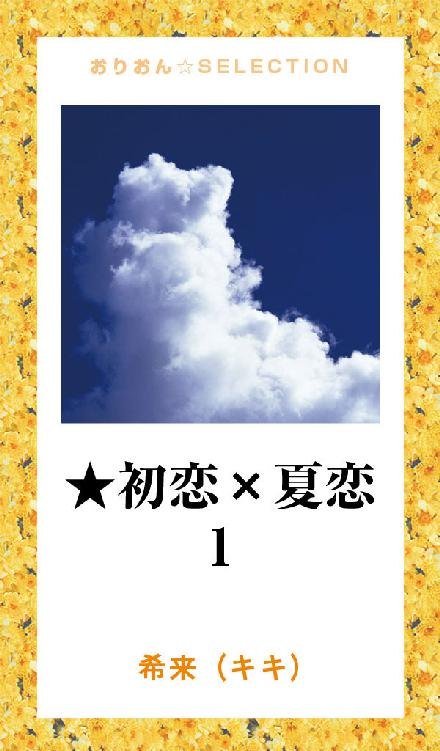
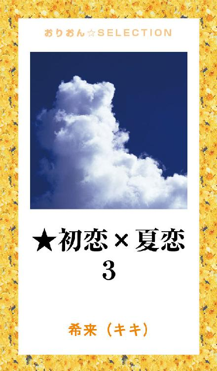

| ★初恋×夏恋 | |
| 希来（キキ） | |
この本は横書きでレイアウトされています。
また、ご覧になる機種により、表示の差が認められることがあります。

秋月和志 ─ 中学３年生
─ 秋 ─
「ねえ！ 和志～！！
ねえってば、聞いてる？」
昼休み、ウトウトしていた俺の肩をゆさぶる
一応......俺の彼女、白井さん......。
なんで付き合ってるのに名字で呼ぶの？って、よく聞かれるけど、名前とか......覚えてらんない......
「なんだよ聞いてるよ......」
伏せていた顔を上げると、白井さんは顔を近づけて話しだす。
少し、興奮してる......。
「昨日、A組の山田さんと一緒にいる所見たって子がいてるんだけど！ 本当なの！？」
やっぱり、こういう話か......面倒くさい......。
付き合う時は、『俺、浮気者だから』なんて言っても、『それでもいいの！！』なんて言ってたくせに、付き合うと、みんな変わっちゃうんだ......。
「見たって子がいてるんなら、本当なんじゃないの？」
ぶっきらぼうに言った俺の言葉に、白井さんの顔は今にも泣き出しそうな顔に変わった
「ひどいっ！ ひどいよ、和志！！」
「だから、始めに言っただろ？ 俺、浮気者だって。俺、ひどい奴なんだよ。嫌なら......別れようぜ」
さっきまで俺に攻撃的な目を向けていた白井さんは、ポカンとした顔になった
「うそ......」
「うそじゃないよ。別れよう、今日で終わりね」
そう言って俺は、白井さんの言葉も聞かず席を立った。
もう、しゃべるのが面倒だったんだ......。
せっかく寝ようと思ってたのに......また授業サボんなきゃなんないじゃん！
俺は階段を駆け上り、屋上に向かう。
昨日、一緒にいたって言ったって、２人で何かしてたわけでも何でもない......。
俺が１人でいたところに山田さんがやって来ただけ。
まぁ～『好きです』って言われちゃったけど、だけど......本当にそれだけなんだ。
俺は屋上に寝転がった。
空は......大きくて気持ちがいい......。
「和志～またサボってるのか～」
俺は声のする方に、顔を向ける。
「達也か......。そういうお前もサボりだろ～」
達也は、笑って俺の隣に寝転んだ。
「お前、また別れちゃったんだって？」
「なに？ もう知ってんの？」
俺は、目を閉じたまま話す。
「ああ、お前の教室で白井が『わぁ～わぁ～』泣いてたからな」
「そっか......」
「もてる男は辛いですね～」
冷やかしの言葉をかけてくる達也に、俺は素で答えたんだ......。
「まあね......」
中学に入ってからの、彼女の数は、わからないぐらい。
それは、長続きしない......って事。
そのほとんどが今では友達だけど、白井さんみたいなタイプの子は、面倒くさくて無理。
達也達からは、『いつか刺されるぞ！！』なんて言われてる。
授業は、もうとっくに始まっているというのに、屋上に向って階段を駆け上がる音が聞こえてきた。
達也はムクッと起き上がり、俺は、寝そべったまま屋上の扉に目を向けた。
扉が開くと、そこに立っていた女の子は満面の笑みで言ったんだ。
「和志、見つけた～！！」
誰だ......？
顔は見たことある......かな......？
俺は、あんまり親しくない奴にまで名前で呼ばれている。
近づいてくるその子に、達也が声をかけた。
「田口も、和志狙いだったんだ」
「田口？ お前、知ってんの？」
俺の言葉に、達也がパッと俺の方を振り返る。
「何？ お前忘れちゃったの？ １年のとき同じクラスだったじゃん！」
「そうだっけ？」
俺達の会話を無視して、田口さんが声をかけてきた。
「和志、白井さんと別れたってホント？」
「ああ......」
田口さんの目は、一瞬で輝いた。
「じゃあ、私と付き合って！」
俺のまわりの女って結構積極的な子が多い......。
でも、今までの経験から、こういうタイプの方が、別れた後もさっぱりしてていいんだ。
俺は体を起こした。
「俺、あんたの事わかんないし、好きじゃないけど......それでもいいの？」
「うん！ きっと、好きにさせてみせるから！」
「俺、軽いって評判なんだけど......」
「それでもいいの！ お願い！ 私と付き合って！」
「じゃあ、いいよ」
白井さんと別れてからわずか......15分。
新しい彼女ができた......。
あの頃は、男と女だとか、愛だとか、恋だとか。
そんな事を、深く考えてなかった。
ただ......その日が楽しければそれでよかったんだ......。
キスだって、セックスだって、俺にとっては、ただの興味。
それに、愛はなかった......。
俺は......恋なんて、した事なかったんだ......。
─ 冬 ─
「ねぇ、和志～」
俺は田口さんと、ベッドの上にいた。
田口さんの部屋のベッド......。
もちろん、服は着ていない......。
「ん？」
俺は起き上がり、Ｔシャツに袖を通しながら答えた。
「ミカの事......好きになった......？」
田口さんの名前は、『ミカ』。
わかっていたけど、俺はやっぱり、名字で呼んでいたんだ......。
田口さんの声に、俺は一瞬固まった......。
『好きになった......？』
好き？
好きか、嫌いか？って聞かれたら、好きになるんだろう......。
でも......。
俺の頭の中を読み取ったように、田口さんは、また話し出した。
「和志ってわかりやすいよね。私はね、付き合い始めた頃よりもずっと和志の事好きだよ。付き合ってみたら、和志って思ってたより優しいし......思ってた以上にかっこいい......。女の子は、和志の事どんどん好きになっちゃうんだよね。けど......」
「けど......何？」
「和志は、人を好きにならないの......？」
初めて、こんな悲しげな目で見られた......。
俺は、田口さんの唇に唇を重ねる。
「好きにさせてみせるって、言ってたじゃん」
「また、こんな事して......そんな事言って......好きになっちゃうんだよ......。和志は、無理だよ。和志は......ミカの事好きにならない......。だから、別れよっか......」
「別に......いいけど......」
初めて『別れよう』って言われた。
別にショックを受けたわけではなかったんだけど、『別にいいけど......』って言った俺の言葉に、田口さんは、悲しそうな目をしてた。
「バカ......即答しないでよ」
田口さんは、顔を隠すように布団をかぶった。
決して、嫌いじゃないんだ......。
ただ......好きでも、愛が無いだけ......。
俺は、田口さんの頭を軽く撫でた
「今まで付き合った中じゃ、田口さんの事一番好きだよ」
布団で顔を隠した田口さんは、泣き声で答えたんだ。
「うそでも嬉しい......。和志、これからも友達でいてくれる？」
「ああ......」
田口さんとは、別れても付き合っていた頃と変わらず接していた。
田口さんと別れたって口に出さなかったからか？
今回はすぐに彼女はできなかった。
俺は、しばらく自由に生きていたんだ。
─ 春 ─
「ねぇ和志！」
田口さんとよく一緒にいる子に呼び止められた。
名前はたしか......『小渕サヤ』。
「なに？」
「ミカに聞いたんだけど......和志今、フリーなんだってね！」
「うん」
「お願い！！ 私を彼女にして！！」
田口さんに、本当に好きな人見つけてって言われてたけど、やっぱり、今回も普通にOKしてしまったんだ......。
でも、その一週間後......。
自分でびっくりするぐらいに、俺は変わってしまった......。
受験生の俺達は、志望校に願書を出しに行く
俺は、達也とその彼女『柴田まどか』、あと他に３人と同じ高校を受験する。
６人で願書を提出し、学校から駅までの道を歩く。
俺は、達也と柴田と３人で後ろを歩いていたんだ
「お前さ～、小渕とよく付き合ってるな～。田口の友達だろ？」
「ああ......そうだよ......」
「お前、そろそろ落ち着いた方がいいぞ！ 本当に好きな子が出来たときに後悔しないようにな！」
達也が俺の肩にポンッと手を置いた。
本当に好きな子......。
俺にもそんな人が現れるんだろうか......。
そう思ったと同時に、後ろから声をかけられた
「あのっ！」
振り返った俺は、そこに立っていた女の子に見とれていた。
背は低くも無く、高くも無く、でも、スラッとしていて、そして、吸い込まれるような綺麗な目......。
髪はひとつにまとめていて、ポニーテールっていうのかな......その栗色の髪がクリクリとなっていて可愛らしかった。
俺は......その子を見た瞬間に、胸がドキドキして止まらなかったんだ。
「あの......」
その女の子の、２回目の言葉で我に返った
「あっ......何？」
「これ......違いますか？」
女の子は、受験票を差し出した
そこには、紛れも無く俺の名前が書いてあった
「あっ！ ごめん、ありがとう！」
俺が受け取ると、女の子は満面の笑みを浮かべた。
その表情に、なぜか胸の鼓動は早まった。
「よかった......じゃあ」
そう言って、走り去ろうとしたその女の子を、俺は無意識に呼び止めていた
「チョッと待って！」
女の子は、不思議そうな顔で振り返る。
その表情にも、また心拍数が上がった。
「君も、この学校受験するの？」
俺の問いに、その女の子は満面の笑みを浮かべて頷いた。
じゃあ、また会えるんだ......。
俺の頭の中に、それが浮かんで、嬉しかった。
じっとその女の子の後ろ姿を見つめていた俺を、達也達は不思議そうに見ていた。
「和志......？」
「ん？」
「お前、どうしちゃったの......？」
俺の顔を覗き込む達也の肩に『ガシッ』と、手を置いた
「俺、絶対この学校合格するから！！」
「えっ！？ どうしちゃったの？ 急に......」
「達也！ 俺、絶対合格して、あの子とまた話がしたいんだ！」
達也は、子供を見るように俺を見て微笑んだ。
「和志って、可愛かったんだな。頑張れよ！」
俺の恋の始まりだった......。
朝川夏 ─ 中学３年生
今日は、高校受験の日
わたしの中学から、この高校を受験するのは４人......
でも、仲の良かった子は１人もいない......
中２から付き合っている彼氏『神崎優也』優ちゃんも違う高校を受験。
って言っても......優ちゃんは、サッカーで行くんだけどね。
優ちゃんは、サッカーがとっても上手くてカッコイイ。
違う高校になるのは寂しいけど、優ちゃんも、わたしも合格しますように......。
教室に入ると、違う中学の制服を着た子が沢山いて、ちょっとドキドキしてた......。
わたしの席は、窓際の前から２列目。
後ろの席の子は、同じ中学だったけど、特に会話する事無く座っていたら、前に座っていた子が振り返った。
「ねぇ！ 消しゴム持ってない？」
振り返った男の子は、髪はほんのり明るい栗色で、顔は、いかにもモテる！って感じのカッコイイ男の子だった。
受験の日に、消しゴム忘れちゃうなんて面白い子だなぁ～
わたしも１つしか持ってなかったんだけど、消しゴムを半分こしてあげたの。
男の子は、可愛い笑顔をわたしに見せた。
知らない子と話をしたからかな？
少しドキドキが治まって、試験は落ち着いて出来たと思う。
この前の席の子のおかげかな？
試験科目全教科が終わると、また男の子が振り返った。
「消しゴムありがとう！ 君、夏っていうの？」
「えっ？」
急に名前を言われてびっくりした。
わたしの驚いた顔を見て、男の子は机の上に置いてあった受験票を指差した。
「あっ、うん」
「合格したら、新しいの返すから、これ......もらっていい？」
男の子は、手のひらに消しゴムを乗せてわたしに見せた。
「う、うん......。でも、新しいの返さなくてもいいよ。それ、半分コだし......」
「いい！！ 絶対返すから」
たかが消しゴムにむきになってる男の子が何だか可愛らしくって、クスッと笑ってしまった。
わたしが笑うと、男の子もニカッと嬉しそうに笑い、
「じゃあ、またな！」
そう言って、友達と教室から出て行った
わたしも、同じ中学の子達と一緒に帰る。
中学校によって、先生に一応報告。
職員室を出たところで、誰かに呼ばれたの。
「夏～！！」
「優ちゃん！！」
優ちゃんは、走ってわたしの側までやって来た。
学校では、手もつないだこと無かったんだけど、優ちゃんは、ほんの一瞬わたしを抱きしめたの。
わたしは、いつも優ちゃんにドキドキしてた。
今日のドキドキはいつもの５倍くらい！！
優ちゃんを見上げると、優ちゃんはわたしのポニーテールを、くるりんと指でまわした。
「優ちゃんも、今帰ってきたの？」
「いいや、俺は面接だけだから」
「じゃあ、もしかして......待っててくれたの？」
優ちゃんは、口では答えずに、わたしの手をギュッと握って笑顔をくれた。
わたし達は、優ちゃんの家に向かった。
優ちゃんのお家は、共働きで平日家には誰もいなかった。
優ちゃんは、一人っ子で、優ちゃんのお家に２人っきり......。
わたしは、またドキドキしてたの。
ドキドキを隠すように......
わたしは、今日の消しゴムの男の子の話を優ちゃんにした。
わたしの隣で、笑って聞いていた優ちゃんは、わたしの腰に手をまわして、ギュッと自分の方に引き寄せた。
「優ちゃん......？」
優ちゃんの真剣な表情に、ドキドキが増していく......。
「なんか......夏が、俺の知らない奴と話したんだって思ったら......妬いちゃうな......」
「優ちゃん......」
優ちゃんの顔がゆっくり近づいてきて、わたしはゆっくり瞼を閉じた。
唇がかさなると、優ちゃんは激しく舌を絡ませる。
"んっ......"
いつもよりも熱いキスに、わたしはそのまま後ろに押し倒された。
ドキドキドキドキ──。
優ちゃんに聞こえちゃうぐらいうるさい鼓動。
唇が離れると、優ちゃんはじっとわたしを見つめて言ったの。
「夏......いい？」
優ちゃんの目が真剣で、ドキドキが止まらなかった。
わたしが、声を出さずに頷くと、優ちゃんは、わたしの髪を優しく撫でた......。
「優しくするから......」
「うん......」
わたしと優ちゃんは、ひとつになった......。
それからわたしは、優ちゃんでいっぱいだった......。
朝も、昼も、夜も......優ちゃんの事ばかり考えていた......。
優ちゃんの側にいて、優ちゃんに触れていたかった......。
大好きだよ......優ちゃん......。
合格発表の日の朝。
今日も、あんまり話した事の無い同じ中学の子と一緒に高校へ行く。
みんなとの待ち合わせ前に、わたしは優ちゃんと待ち合わせをしていた。
駅近くの公園──。
わたしは待ち合わせの15分前に着いたのに、優ちゃんはもう待っていた。
「優ちゃん早い～」
優ちゃんは優しい笑顔をくれて、近づいたわたしの手を握った。
わたしも、優ちゃんの顔を見上げて微笑む。
「優ちゃん、もしかして緊張して眠れなかった？」
「緊張なんてしてないよ、俺合格するし！ 早く夏に会いたかっただけだよ」
本当かウソなのかわからないような、優ちゃんのいたずらな笑顔。
でも、言ったあとに優ちゃんの顔が真っ赤だったからわかったよ。
わたしも、早く優ちゃんに会いたかった。
同じ中学の子と一緒に高校の門をくぐる。
入ってすぐのところに受験番号が貼りだしてあった。
同じ高校を受験した４人、全員受験番号を見つけて喜んでいたら、誰かが大きな声でわたしの名前を呼んだ。
「夏～！！」
ここに、わたしの事を名前で呼ぶ人なんているはず無いし......同じ名前の子でもいるのかな？
なんて思って知らん振りしてたの。
すると......いきなり誰かがわたしの手を掴んだ。
びっくりして振り返ると、
「夏！ 受かってたろ？」
わたしの手を掴んで笑顔で立っていたのは、消しゴムの男の子。
わたしは、あまりの馴れ馴れしさにちょっと驚いた。
「あっ、うん......あなたは？」
「受かってた！ 夏の消しゴムのおかげ！」
男の子は、掴んだわたしの手を持ち上げて、自分のポケットから何かをだして、わたしの手の平に乗せた。
「これ、約束の消しゴム」
馴れ馴れしいのに、ちゃんと消しゴムを返してくれた律儀なこの男の子が何だか可愛らしくて、わたしは思わず笑ってしまった。
「夏、どこの中学？」
「わたし、西中」
「隣じゃん！ 俺、東中。じゃあ、同じ方向だな」
楽しそうに話す男の子を眺めながら思ってた。
どうして知らない子とこんなにしゃべってるんだろう？って......。
男の子と始めからこんなに話すなんて、優ちゃん以来かも......。
「和志、行くぞ～！」
遠くでこの男の子の友達が呼んだ。
消しゴムの男の子......『和志』って言うんだ。
「じゃあ、またな！ 夏」
「うん」
あっ......『またな』って言われて『うん』とか言っちゃった。
おまけに何度も『夏』って呼び捨てされてるのに、なんだか......悪い気がしなかった......へんなの......。
わたしは何でも優ちゃんに話していたけど、今日の事は、なんとなく......優ちゃんには言えなかった......。
春休みはあっと言う間に過ぎ去って......。
４月 ─ 入学式を迎えた。
高校に着くと、やっぱり和志がすぐに声をかけてきた。
「夏～！！」
「おはよう！」
駆け寄ってきた和志に微笑んで声をかけると、和志はニカッと笑った。
「夏、言っちゃっていい？」
「えっ？ なにを？？」
「夏のクラスだよ！」
和志は、クラス分けが書いてある看板を指差して言った。
「あっ、ダメダメ！ 自分で見つけたいもん！」
「じゃあ、一緒に行こう」
和志はニコッと笑って、わたしの横に並んだ。
もう、見たくせに......なんだかおかしい......。
わたしはなんだか可愛らしい和志を見てクスッと笑った。
わたしは、大きな看板を見上げる......。
『朝川夏......』何度も心の中で繰り返す程も無く......すぐに見つかった！
だいたいこういうのって、出席番号順にかいてあって、いつも前のほうだからすぐに見つかっちゃう。
「あった！！」
わたしの声の後に和志も同じように言った。
「俺も！」
わたしは和志に顔を向ける。
だって、さっき見て知ってるくせにおかしいんだもん。
和志もわたしの方に顔を向けて、笑ってた。
「１年間よろしくな！」
「えっ？同じクラスなの？」
わたしのキョトンとした顔を見て、和志は看板を指差して言った。
「ほら、夏の前に書いてある名前......」
『秋月和志』
あきづきかずし君か～。
心の中でそう思っていると、知らない女の子がわたしの名前を呼んだ。
「夏......」
びっくりして振り返る。
そこには、とてもしっかりしてそうな......可愛らしい女の子が立っていた。
「えっ......」
戸惑うわたしに、女の子はクスッと笑って続けた。
「夏、って呼んでもいい？」
「あの......」
「わたし、『柴田まどか』和志と同じ中学。わたしも一緒のクラスみたいだから、仲良くしようね♪」
「うん、よろしくね」
同じクラスにもう知り合いが２人も出来てホッとした
これも、和志のおかげかな？
わたし達は、１組で生徒はそれぞれ各教室に入った。
わたしと和志の席は、受験の時と同じ前後ろ。
男女まぜこぜの名前順。
『朝川夏』と『秋月和志』で前後ろ。
まどかの席は、２列隣の後ろの方。
少し離れちゃったけど、なんだか、楽しい予感に胸がワクワクしていた。
朝......わたしは１人で電車に乗る。
優ちゃんの学校も、同じ路線にあるんだけど、一緒に行ったのは、入学式の後１回だけ。
その後から、優ちゃんはクラブの朝練で早く行かないとダメになったから......。
中学の時は、ずっと一緒に行ってたのに。
あの頃は、学校がある日に優ちゃんと会えないなんてなかったもん。
なんだか、寂しかった......。
「夏、いつも誰と一緒に来てるの？」
偶然高校の駅で会った、まどかが振り返って言った。
わたしの隣には、和志。
まどかの隣には、まどかの彼氏『宮田達也』がいた。
「いつも１人だよ。仲良かった子は、こっちの方に来ないから......」
「そうなんだ......じゃあ、明日から一緒に行こうよ！ いつも何分の電車に乗ってるの？」
次の日から、わたしは和志達と一緒に学校に行くことになった。
授業が始まる前、和志は必ず振り返っていつも同じ事を言う。
『夏、消しゴムかして』
わたしが『あげる』って言っても絶対受け取らなくて、次の授業が始まる前に、また同じ事を言う......。
しょうがないから、わたしは毎日２コ消しゴムを持っていくようになった。
わたしのと和志の......。
今日も、いつものように和志が振り返る。
わたしもいつものように、和志に消しゴムをかしてあげた。
でも......今日は、和志だけじゃなかった。
授業の途中で、わたしの隣の席の子までが、
「朝川、消しゴムかしてくれない？」
その声に、わたしよりもすばやく反応したのは、和志。
パッと振り替えったかと思うと、
「俺の貸してやるよ」
そう言って、わたしの貸してあげた消しゴムとは違う消しゴムを貸してあげた。
"えっ？ 和志消しゴム持ってるの？"
頭の中にそれが浮かんで、わたしは和志の顔をのぞきこんだ。
すると......和志はチラッとわたしの顔を見てニヤッと笑い、そしてすぐに前を向いた。
その授業が終わると、和志は何も言わずに消しゴムをわたしの机の上に置いた。
「和志、消しゴム持ってたの？」
和志は横を向いたまま、すねた子供の様に頷いた。
なんだか......可愛いんだけど。
「じゃあ......どうして？」
わたしが、和志の可愛らしい横顔を覗き込むように聞くと、和志もわたしに顔を近づけて答えたの。
「嫌か？ 嫌なら......もう借りない......」
和志の真剣な表情にドキッとして、少し体が熱くなった......。
「いっ......嫌なんかじゃないよ！
なんでかな？って、思っただけだよ」
和志の真剣な表情は、一瞬で笑顔に変わった。
そして、
「夏の事......好きだから借りてるんだよ！」
そう言って、わたしの頭を『ポンッ』と触って席を立った
うぅ～！！ 恥ずかしい～！！
本気なのか、冗談なのか、わかんないんだけど......。
こんな事言われて、ドキドキしちゃうわたしって、悪い子？？
最近、優ちゃんにいろんな話が出来なくなっていた。
今日は、調理実習。
女子は家庭科で、男子は技術の授業。
男女別々で、２クラス合同の授業。
１組のわたし達は、２組の女子と一緒にカップケーキを作っていた。
出来上がったカップケーキは、１人３個ずつ。
１つはみんなで試食して、残りの２つは、みんなそれぞれ綺麗にラッピングしたり、そのまま袋に入れて持って帰るなど自由。
わたしは、ひとつずつラッピングした。
実習が終わって教室に戻ると、技術室で授業だった男子はすでに戻っていて、和志は自分の席で２組の達也と一緒にいた。
わたしは自分の席に戻る為に、まどかは達也のそばに行く為に和志達のいる方に向かう。
その時......わたし達の後ろから、２組の女子が和志の元へ駆け寄って行った。
「秋月君♪ これさっき作ったの食べて～」
クラスが違うから、グループも別だったけど、さっき一緒に作ったカップケーキ......。
かわいらしくラッピングしてあった。
きっと、和志にあげよう！って思ってラッピングしたんだ。
わたしは立ち止まって、その光景を見ていた。
まどかも、立ち止まってわたしを見ていた......。
和志は、２組の子を少し驚いた顔をして見たかと思うと、すぐに、ニコッとかわいらしい笑顔を見せた。
その表情に何故かわたしがドキドキしていた。
「ありがと～！ でも、俺甘いもの苦手だから......ごめんね～」
なんだ......和志は甘いものが苦手なのか......。
２組の子のカップケーキを受け取らなかった事に、なぜか......少しほっとして、甘いものが苦手ってわかった事に、なぜか......少しがっかりしてた。
カップケーキ、和志にあげようと思ってたのにな......。
２組の子が、がっかりして教室を出たのを確認して、わたしは自分の席に戻り、まどかは達也の側に駆け寄って、カップケーキを手渡した
その姿を見て、和志はわたしの顔を覗き込むようにして言った。
「夏は、俺にくれないの？」
「えっ？」
だって......和志、今甘いものが苦手だって、確かにそう言ったよね......？
頭の中でそう思っていたわたしの前に和志が両手を出す。
「ちょうだいよ♪」
子犬のようにかわいらしく待っている和志の手に、わたしがラッピングしたカップケーキをひとつのせると、和志は満面の笑みを浮かべ、
「おかえしにこれあげる！」
そう言って、木で作ったかわいらしいリングをわたしの手に握らせた。
ちゃんとわたしの名前が彫ってある。
「これ......和志が作ったの......？」
「うん」
少し照れながら頷いた和志が可愛かった。
「ありがとう♪」
わたしがお礼を言うと、和志は頭をかいた。
その姿を見て、達也はクスッと笑った。
「お前、さっきの時間一生懸命何か作ってると思ってたら、それ作ってたのか？ お前、ホント変わったな～。そんな可愛いやつだったとは思わなかったよ～」
達也に続いて、まどか。
「本当に～！ 中学の時から今の和志なんて、想像できないよね～」
２人の言葉は意味深で、頭の中でずっと考えてた。
和志って......いったいどんな中学生だったの......？
達也とまどかに笑われて、和志は照れくさそうにしてた
「でも、和志～。夏、もう１個は彼氏にあげるんだよ～」
和志をからかうようにまどかが言うと、達也が和志よりも先に口を開いた。
「バカ！ まどか、余計な事言うなよ！ 和志の初恋なんだから......」
わたしは、和志のくれたリングをボールチェーンにつないで携帯につけていた。
まどかがそれを眺めて言う。
「いいな～夏、こんなの作ってもらって。達也は、作ってくれないもんな～」
そして、何かを思い出したようにクスッと笑った。
「何？ どうしたの？」
「うんん！ なんかさ！ ホントあの日以来、和志がさ～、すっかり人が変わっちゃったから、なんだかおかしくって......」
「あの日？ あの日って？？」
わたしの問いかけに、まどかは一瞬わたしの方に顔を向けてニコッと笑うと、また、リングに目を向けた。
「夏に、初めて会った日だよ♪」
「初めてって......受験の日？」
わたしがまどかの顔を覗き込むように言うと、まどかはリングを指で触りながら、パッとわたしの方に顔を向けた。
「違う！ 違う！！ 願書出しに行った日だよ～！」
"えっ？"わたしは首をかしげた。
願書出しに行った日に、和志と会ったかな？
キョトンとしたわたしを見て、まどかは笑って話し出した。
「夏、和志の受験票拾ってあげたでしょ？」
あっ......そうだ、あの日、受験票落とした子がいて、ずいぶん先まで歩いてたんだけど、たぶんあの子だ！って思って追いかけたんだ......。
あの子が、和志だったの......？
「あの日以来、ホント変わったんだよ～。絶対合格する！って、合格して夏と話がしたかったんだって、今まで遊んでた子みんな切っちゃって、携帯まで替えてるの」
まどかは笑って話してたけど、わたしは、わからない事でいっぱいだった......。
遊んでたって......？
どんな遊び友達なの......？
それは......男の子？ 女の子？
それとも......友達じゃなくて......？
変わったって、いったい和志は、どんな子だったの？？
わたしの頭の中が疑問でいっぱいになって、思い切って、まどかに聞いた。
「和志って......中学の時、どんな子だったの？」
「ん......？」
まどかは、少し考えて顔を上げた。
「あんまりしゃべると達也に怒られるからな～。 "おしゃべり！！"って......。でもさ、和志いい子でしょ？」
『いい子でしょ？』まどかに聞かれて、頭の中に、わたしの知ってるいろんな和志がいっぱいになった......。
なんだか、顔がゆるんでしまうのは、気のせいかな......？
「達也が言ってたけどさ......和志、ホントに夏の事好きだって！ それは、わたしが見ててもそう思うけどね♪ 夏、和志の初恋なんだって。でも......夏には、彼氏がいるんだよね～」
『彼氏......』
その言葉に、頭の中にいっぱいだった和志がひとつひとつ消えていった。
そう......わたしは、優ちゃんと付き合ってるんだもん！
わたしが何も言わないでいると、まどかはわたしに顔を近づけて言った。
「でもさ......夏、だんだん和志の事好きになってきてるでしょ？」
「えっ？」
わたし......好きになってきてる？
「だってさ！ 夏、和志といる時楽しそうだよ♪ 好きな人といると、楽しいもんね♪」
ニコッと笑って言った、まどかの言葉が頭から離れなかった。
まどかに言われてから、和志の事目で追っちゃってる。
これって......二股なんじゃないの......？
わたしは、和志にドキドキしてしまうたびに、罪悪感に押しつぶされてしまいそうだった。
もうすぐ体育祭──。
わたしと和志は、クラスの団看板作成係になった
授業の後クラスからは、わたしと和志を含めて４人で作業していた。
和志はとても器用で、看板の絵はほとんど和志が書いた
あとは、ペンキを塗るだけ！
ここまでは早かったんだけど......和志はペンキ塗りにすぐ飽きちゃう。
だから、30分もすると......すぐ休憩。
わたしは、和志のやる気の元！と言っても、お菓子だけどね♪
それを毎日持って行って、それでつってた。
今日も、団の看板作成。
けど......今日は、わたしと和志以外の子が用事で帰っちゃって、わたしと和志の２人で作業をしていた。
和志は、今日もやっぱり30分程で飽きちゃったみたいで......床にごろんと寝そべった。
「和志、そんなところに寝そべったら服汚れちゃうよ」
和志は仰向けに寝そべって、膝を立てて目をつむっている。
「だって、飽きちゃったんだもん......」
子供みたい......。
こんな和志を"かわいい......"って思っちゃう。
わたしは、棒つきの飴を２つ出して、和志の側に座った。
目を閉じている和志がなんだか可愛くて、愛おしく感じちゃう......。
わたしの手は、自然と和志の髪に触れていた......。
すると......和志はびっくりした顔をして目を開けた。
わたしも、和志のその顔にびっくりして、和志の髪に触れていた手を引っ込めた。
「あっ、ごめん！」
「いや......いいんだ！ 俺......今、ドキッとしちゃった。なんか......うれしい」
そう言って、嬉しそうに笑った和志に、またドキドキしていた。
「和志、飴食べる？」
「うん♪」
イチゴミルク味と、チョコミルク味......。
２本の飴を見せると、和志は少し考えて、イチゴミルク味を指差した。
そして、口を"あ～ん"と開けた。
わたしが飴を口の中に入れてあげると、和志はニカッと笑った。
「なあ、夏。携帯鳴ってるんじゃない？ なんか、"ブー"って響いてくる」
「ほんと？」
かばんの中に入れていた携帯を開くと、
着信 ─ 優ちゃん
ディスプレイに表示された『優ちゃん』の文字に、後ろめたいような気持ちがのしかかってきた。
携帯を手にじっとしているわたしを、和志は不思議そうに見ていた。
「夏？ 早く出ないと切れちゃうよ」
寝そべった和志に言われて、わたしはやっと携帯に出た。
「もしもし......？」
「夏？ 俺......」
優ちゃんの優しい声に胸がズキンッと音を立てた。
「うん......」
「今、どこ？」
「まだ学校だよ......どうして？」
「俺、早く終わったから......まだ、帰らない？」
「うん......」
「そっか......じゃあ、いいや」
「うん......ごめんね......」
「じゃあ......」
「うん......」
頭の中が、ごめんなさいでいっぱいだった。
帰ろうと思えば、帰れるのに、わたしは今、和志と一緒にいる方を望んでいるの......？
自分の気持ちがわからなかった......。
こんな自分が嫌だった......。
優ちゃんとは、もう２週間会ってないんだ。
「誰？ 優ちゃん？」
和志は、寝そべったままわたしの方に顔を向けた。
和志は、優ちゃんの事を『優ちゃん』って呼んでいる。
なんでも......わたしの好きな人は、好きになろう！と思ってそう呼ぶ事にしたんだって......って、まどかが言ってた。
「うん......」
わたしは携帯をカバンに戻して、看板の前に座った
「優ちゃんなんて？」
「今日ね、クラブ早く終わったんだって。優ちゃんの学校も体育祭前だからかな？」
わたしは、和志に背を向けたままハケにペンキをつけながら答えた。
「夏に......会いたかったんじゃないの？」
「......どうかな？」
わたしが小さな声で答えると、和志はムクッと起きて、わたしの横に座った。
和志の視線を感じていても、わたしは和志を見れなくて、少しうつむいたわたしに、和志はくわえていた飴を手に持って話し出した。
「会いたいに決まってるじゃん！
俺なんかさ、なんで土日学校休みなんだろうって思ってるもん！ 夏休みになって、夏に会えなかったら、俺死んじゃうかも！」
和志は飴をまた口にくわえると、ペンキにハケを突っ込んだ。
和志の言葉にまたドキドキしてしまう......。
和志は、何の気もなく言っているの......？
サラッとこんな事を言う和志の言葉がどこまで本気なのかわからなかったの......。
だって......わたしの事を好きだって言いながら、優ちゃんとわたしの仲を応援するような事も言うんだもん。
「夏......俺、今日頑張ってするからさ！ 帰っていいよ」
「えっ？」
「夏も優ちゃんに会いたいだろ？」
そう言って和志は黙々とペンキを塗りだした。
普通だったら、こう言われて喜んで帰るのかな......？
でも......でも、わたしは......『帰っていいよ』って言葉にショックをうけていた......。
和志は、わたしと優ちゃんが会っても平気なんだ......。
そう思ったら、なんだか胸が痛かった。
「いいよ......そんなの......」
わたしの言葉に和志は即答する。
「いいって！ 俺ばっか夏を独占したら優ちゃんに悪いし！ 俺が優ちゃんの立場だったら、夏を学校に行かせたくなくなっちゃうくらい嫌だよ」
和志はまた普通にこんな事を言う......。
わたしは、今まで口に出来なかった感情がいっぱいになって涙がでそうだった。
そして、自分の気持ちがフラフラするのを和志のせいみたいに言ってしまった。
「和志がそんな事ばっかり言うから、わたしおかしくなっちゃうんだよ！」
和志は、感情的になったわたしにびっくりして、うつむいたわたしの顔を覗きこんだ。
「夏......？」
何か言うと、涙まで一緒に零れ落ちそうだったわたしは、うつむいたまま首を横に振った。
和志は、わたしの握っていたハケを手にとってペンキ入れに戻すと、わたしの手をそっと握った。
「夏......？ もしかして......俺のこと好きになっちゃった？」
また、返事に困るような事を言う。
でも、わたしは、そんな和志のペースにいつも流されてしまう......。
「バカ！！」
握られた手と反対の手で和志の肩を押すと、和志はニコッと笑った。
「夏、ア～ンしてみ」
和志は自分の口を『ア～ン』と開けてみせ、わたしが和志に言われるがまま口を開けると......和志はくわえていた飴に『チュッ』とキスをして、わたしの口に入れた。
そして、自分の頬に手を当てて、
「キャッ♪ 間接キッスー♪」
かわいい和志に、わたしはドキドキしながら笑った。
今日も暗くなるまで作業して、今日も２人で電車に乗った。
わたしの学校から家に向かう方に進んで、４つ目が優ちゃんの学校の駅。
その２つ目が、わたしの降りる『月の道駅』、次の駅が和志の降りる『星の里駅』。
和志と２人で帰るこの時間、わたしはいつもドキドキしていた......。
和志と２人っきりのドキドキと、優ちゃんが乗ってきたら......っていうドキドキ。
わたしは１人しかいないのに、わたしの心は、２人の男の子を想っている......。
ごめんなさい......いつも心の中でそう思っていた。
わたしが降りる駅に近づくと、和志は電車の窓から外を眺めながら言った。
「夏、ちょっと時間ある？」
「うん......何？」
「夏に、見せたいものがあるんだ。俺の駅までいい？」
わたしは、自分の降りる駅『月の道駅』を通り過ぎ、初めて和志の降りる『星の里駅』で降りた。
隣の駅なのに、行った事のなかった『星の里駅』は、『月の道駅』よりも山の方にある改札を出ると、大きな歩道橋の上に駅の出口がつながっていた。
３つに道が分かれていて、ひとつは公園でもあるのかな？ 木が沢山茂っているのが見える。
和志はその木が茂っているほうに向って歩きだした。
わたしは、キョロキョロしながら和志の少し後ろを歩いていた。
ふと気がつくと......前の方で、女の子が２人こっちの方に手を振ってる。
近づいてきたのはギャルっぽい子で、満面の笑みでこっちに向かって走ってきた。
「かずし～！！」
和志の知り合い？
女の子は、ちょっと派手な化粧をしていてＭ女の制服を着ていた。
Ｍ女の子は、わりと派手な子が多い。
この２人も、スカートはチョ～ミニで髪は金髪に近い茶色。
１人はサラサラロングで、もう１人はクルクル巻いてた。
まどかとはちょっと違うタイプだけど、和志は、いろんな子と知り合いなんだ。
心の中で思っていると、Ｍ女の２人はわたしには気が付いていない様で、和志に話しかけた。
「久しぶり～！！ 元気にしてる？」
「ああ、元気だよ......」
ハイテンションな２人に対して、和志は淡々と答えていた。
「和志、携帯変えたでしょ～？ 全然連絡取れないんだもん！ みんな言ってたよ～」
サラサラロングの女の人に、和志はほんのり笑っただけで、何も答えなかった。
「何～？ 和志変わったって噂で聞いてたけど、テンション低くない？ 友達でいてくれるって言ってたのに。わたし達、愛し合った仲じゃん！」
えっ？？ 愛し合ったって......？
"ドクン！！"
わたしの中で、音がしたと同時に、クルクル巻いた子が、
「そうだよ～愛し合った仲じゃ～ん！！」
"ドクン！！ ドクン！！"
さらに激しく鳴り響く......。
この３人の会話は、わたしとは世界が違う感じがした。
「お前とは、やってね～よ！」
お前とはって事は、サラサラロングの人とは、そういう関係だったって事......？
和志の言葉に重ねて、サラサラロングの人が言った。
「そうだよ～。サヤ、やってないじゃ～ん！！ あんただけじゃない？ 和志と付き合って、キスもしないで別れたの～」
サラサラロングの人が少し笑いながら言うと、サヤって子は膨れた口をしてサラサラロングの子を押した。
「ミカひっど～い！！ キスはしたも～ん！！」
キスはした......だって......。
聞きたくない、聞きたくない、聞きたくないよ～！！
わたしの心が叫んでた。
「ごめん、ごめん！！」
ミカは、膨れたサヤをなだめるように言って、すぐに和志に顔を向けた。
「でも和志、なんで急に携帯まで変えたの？ 教えてよ、番号」
「ダメ～」
「え～なんで～！！」
ミカとサヤが声をそろえて言った時、２人と目が合ってしまった。
「あれ？ もしかして、和志の彼女？」
サラサラロングのミカの言葉に、和志が答えた。
「まだそんなんじゃないよ」
「じゃあ、何なの？」
ミカとサヤは、和志にくらいついて言う。
「俺の好きな子だよ」
２人の視線は、一気にわたしに向けられた。
「好きな子？ 和志から、好きとか......そんな言葉初めて聞いたよ～。確かにかわいいよね～名前なんて言うの？」
話しかけてきたのは、ミカだった。
「夏です......朝川 夏......」
わたしは、ちょっと緊張して答えた。
「夏？ なっちゃん？ ねぇ......なんで和志と付き合わないの？」
"なんで付き合わないの......"
ミカの言葉に答えられなかった。
わたしが黙り込んでいると、横からサヤが入って来た。
「そうだよ～もったいな～い！ 私なんて、いきなりフラれたのに～！ 和志、キスだってチョ～うまいよ～！！」
"キスだって......"
ドクン、ドクン心臓が大きく音を立てた......。
胸が痛くて......苦しかった......。
「バカッ！！」
ミカの言葉と同時に、和志がわたしの肩を抱き寄せた。
わたしの心臓は、ドクンドクンから、ドキドキに変わる。
和志の方に顔を向けると、すぐ近くにある和志の横顔にまたドキドキが増した。
「夏に余計な事言うなよ！」
サヤは、少ししょんぼりした様に下を向き、ミカは、驚いた顔をしていた。
「ねぇ！ 今、和志名前で呼んだ？ 和志が女の子の事名前で呼ぶの初めて聞いた～！！ そうか～変わったって......そういう事か～」
ミカは１人で納得して、そして和志に微笑んだ。
和志は、照れたように頭をかいた。
「いいよ！ 和志、今のほうがいい！！ そんな感じがする！！ じゃあ、頑張ってね！！」
ミカは、和志の肩をポンッとたたいてサヤの手を引っぱって行ってしまった。
２人が去ったあと、少し気まずい空気の中、わたしは和志の後をまた歩きだした。
みんなが変わったって言ってたのは、こういう事だったの......？
和志は、沢山の子と付き合ってたんだ......。
そして、わたしの頭の中がぐちゃぐちゃになった頃、和志の足が止まった。
ついたところは、ものすごく夜景の綺麗なところだった......。
街の明かりが、まるで星のように輝いて見えた。
わたしは、和志と微妙な距離を開けて立ち止まり、しばらくその夜景を見ていた。
微妙な距離と、沈黙が苦しかった......。
その沈黙を先に破ったのは......和志。
「ねぇ」
「ん？」
わたしはドキッとして答え、和志の方に顔を向けた。
この場所に来て、初めて目をあわせる。
「さっきの２人の話で、俺の事嫌いになっちゃった？」
嫌いになんか......ならないよ......。
わたしは、和志とあった目をそらす事が出来ずに、和志を見つめていた。
「そんな簡単に嫌いになれたら、悩まないよ......」
「じゃあ、この微妙な距離は何なの？」
確かに......。
確かに微妙な距離が空いている......。
だって......あんな話聞いちゃったんだもん、これぐらい空いちゃうよ......。
「和志がこっちに来てよ！」
そう言ってすぐ、和志の真剣な眼差しにドキドキしてた。
和志は大きな一歩でわたしの側に寄り、そして、わたしの腰に両手をまわして向き合うようにギュッと引き寄せた。
和志の顔が近くて、一気に心拍数があがる。
「和志......？」
わたしの言葉をかき消すように、和志が言う。
「見て......綺麗じゃない？」
和志の目線の方に目を向けると、綺麗な夜景。
あたりはもう暗くて、まわりは、カップルだらけだった。
「俺さ、ここに女の子と来るの初めてなんだけど、わかった事があったんだ......」
そう言って、和志はわたしを見つめる。
わたしのドキドキは、和志に聞こえちゃうぐらい大きくて止まらない。
和志は、さらにギュッとわたしを引き寄せた。
「この夜景と、このシュチュエーションで、キスしない奴なんか、いないと思わない？」
"キ......キス！？"
ドキドキして、和志の目に吸い込まれそうだった。
ゆっくりと和志の顔が近づいてくる......。
「でも......和志......わたし......」
わたしの言葉を、和志は聞いているのか......？
さらに顔を近づけて、
「夏......目閉じて......」
わたしは、言われるがまま自然と目を閉じ、和志と......唇を重ねた。
優しくて......でも、情熱的なキス......。
全身を電流が流れるようにドキドキして、重なった唇は和志を求め続けた。
優ちゃんの事は忘れて、和志のキスに夢中になりそうなわたしの頭の中に、ミカとサヤが浮かんで、あの２人も和志とこんなキスをしたのかと思うと、全身が嫉妬で埋め尽くされる......。
和志の手を掴んでいたわたしの手に力が入ると、和志はまたギュッとわたしを強く抱きしめてくれた。
和志の腕の中にいるのを、心地よく感じていた。
唇が離れると、全身の力を奪われたように、わたしは、和志に寄り添っていた。
「和志......わたし、悪い子だよね......」
「どうして？」
「だって......」
わたしが言葉に詰まると、和志は優しくわたしを抱きしめて言った。
「俺が無理やりしたんだよ......」
無理やりされたキスじゃない......。
わたしは......わたしも和志とのキスを望んでいたの......。
わたしは、和志の事ばかり考えていた......。
次の日、いつの間にかわたしの目は和志を追っていた。
頭の中が和志でいっぱいで、わたしは和志にドキドキしてた。
でも、和志は何事もなかったかのようにわたしに接する。
わたしは、和志のすべてのしぐさにドキドキしているのに......。
和志にとったら、あのキスなんて大した事じゃなかったのかな......？
キスする前は、こんな事思わなかったのに、なんだか悲しい気持ちになちゃうよ......。
今日の体育は、男子は外でサッカー。
女子は、教室で保健の授業だった。
隣のクラスの女子も一緒だったから、席は自由に座る。
わたしは自分の席に、そして......まどかが和志の席に座わると、この前和志にカップケーキをあげようとした２組の前田さんが、まどかの事をじっと見ていた。
わたしも、たぶん......まどかもその視線に気付いていたと思う......。
けど、わたし達は前田さんの方に顔を向けなかった。
「ねぇ、２人何かあった？」
まどかの言葉にドキッとして、昨日の事を思い出した。
「えっ？ どうして？」
何かあったって、わかっちゃうぐらい焦って答えた。
「う～ん......何か違う感じがしたから。キスでもしちゃった？」
するどいまどかに赤面する。
わたしの顔を見て、まどかはニコッと笑うと、わたしの頭を撫でた。
「そっか～よかったね♪」
『よかったね』まどかの言葉に笑う事が出来なかった。
だって......優ちゃんがいるのに......。
今日になって、いや......今になって、罪悪感でいっぱいになった。
和志の事も好きだけど、わたし......まだ、優ちゃんの事も......。
「夏？」
まどかの言葉で、ハッと我に返った。
「ん？」
「なんか......悩んでる？ 優ちゃんの事？」
「こんなの......二股だよ......」
まどかは、わたしの顔をしばらく眺めて微笑んだ。
わたしの言葉に、『そうだ』と言わないまどかに少し救われる。
「夏の気持ちがはっきりするまで、このままでもいいんじゃない？ 優ちゃんには悪いかも知れないけど、和志は、承知の上でしょ？ 夏が優ちゃん選んでも、それはしょうがないよ」
『優ちゃんを選ぶ......』
そうだよね......どっちかはっきりさせないとダメなんだよね。
優ちゃんを選ぶと、わたしは今みたいに和志と一緒にいられないんだよね......。
このままじゃ、二股だもん......。
そう思ったら、頭の中が和志でいっぱいになってきた。
先生が教室に入ってきて、まどかは前を向き、わたしは、グラウンドでサッカーをしている和志を見ていた。
中学のときは、よく優ちゃんのサッカーを見ていたな......。
サッカーをしている和志と優ちゃんをダブらせて見てしまう。
１組対２組で試合が始まって、和志がボールを取りに行った瞬間に２組の男の子と接触して、和志は大きくこけた。
「あっ！」
みんなの視線がわたしに集まった。
授業中だって忘れてた......。
すっかり試合に......って言うより、和志に見とれていて、つい大きな声をだしてしまった。
「あっ......すいません......」
「よそ見しないでよ！ 朝川さん！」
先生は授業を続け、まどかは振り返ってニコッと笑った。
「今、和志見てた？」
わたしの体と顔が一気に熱くなった。
キーンコーンカーンコーン♪
授業が終わると、まどかはすぐにわたしの方に振り返り、ニヤニヤとわたしを見た。
「夏、かわいいなぁ～。私から見たら、間違いなく和志だけどぉ～」
「............」
「じゃあさ～想像してみたら？」
まどかは、名案を思いついたように目を輝かせている。
「何を？」
「和志のキスと、優ちゃんのキス！！」
まどかは、わたしの耳もとでささやいた。
わたしは、また赤面する......。
「いいよ～！！ そんなの～！！」
「なんで～？？ すぐにわかるって！！ ほらほら、じっくり考えて！！」
まどかに頭を机に押し付けられて、わたしは、自分の机に顔をうずめた。
そんなの考えない......って思っていたのに、『和志のキス......』って言われただけでドキドキしちゃう。
まどかは、またわたしの耳元でささやいた。
「キスしてるところ、どっちに見られたら嫌か考えてみたら？」
それは......それは、間違いなく和志だよ......。
昨日の今日だからかな。
だから、そう思うのかわからないけど、和志に、優ちゃんといる所も見られたくないって思ってた......。
まどかは、せかすように聞いてくる。
「ねぇ！ どっち？」
わたしはゆっくりと顔を上げながら答えた。
「和志......かな......？」
顔を上げたわたしは、今の言葉を消し去りたいぐらい驚いた。
だって、さっきまで、まどかが座っていた席に和志が座っているんだもん！！
すぐ横に立っていたまどかは、ニヤニヤわたしを見ていた。
「えっ？ 何？」
何も知らない和志は、キョトンとしたかわいい顔をわたしに向けた。
わたしは一気に熱くなって、慌てて答えた。
「なっ、何にもないよ！」
深く聞いてこなかった和志にホッとして、Tシャツを着ている和志の腕に目がいった。
肘の辺りに、血がにじんでる。
「これ、さっきこけた時の？」
和志は、自分の肘に目を向けて、
「ああ、そうだよ......」
そして、すぐにわたしの方に顔を向けた。
「......って、夏みてたの？」
和志の目がわたしの方に向くと、またドキドキが始まった。
そうだ......授業中だったんだ......。
「チョ～かっこ悪い......俺」
和志は照れくさそうに笑って、わたしの頬をつまんだ。
わたしの頬に触れる和志の手にドキドキする......。
でも......和志は、普通に言ったんだよ......。
「授業中、よそ見するなよ！」
そして、また達也達のほうを向いて話しだした......。
なんか......なんか、やだな......。
わたしばっかり、和志を意識してるみたい。
わたしはこんなにドキドキしてるのに、和志は平気なの......？
わたしは、みんなの会話に入る元気がなくて黙って聞いていた。
チャイムが鳴って、達也は２組に帰り、まどかも、自分の席に戻った。
「なぁ、夏どうかした？」
和志がわたしの顔を覗き込む。
「どうもしないよ......」
「うそだ～元気ないじゃん！」
和志は、さらに顔を近づけて聞いてくる。
「............」
黙っているわたしの手を和志は握った。
またドキドキする......。
「だって、和志は平気なの......？」
「えっ？ 何？」
和志がキョトンとした顔で聞いてきたのに、わたしは一度言葉を呑んで答えた。
「......いい。何にもない」
和志は、わたしの顔を覗き込む。
そして、今度はイタズラな笑みを見せた。
「昨日、あんな事しちゃったから？」
わたしは一気に熱くなった。
『あんな事』で、昨日のキスがよみがえる。
でも、わたしの口からは素直じゃない言葉が出てくる......。
「あんな事って何？」
「忘れちゃった？」
「うん」
わたしの言葉に、和志の表情が少し悲しそうな顔になる。
その表情が気になってしょうがないよ......。
和志は、わたしから目をそらして机の上の教科書をぺらぺらめくりだした。
和志......怒っちゃった？
少し不安になって、和志の顔を覗き込むと、和志は、パッとわたしと和志の顔の前に教科書を広げた。
びっくりして、和志の方に顔を向けると、和志は、ニコッと笑ってわたしを見てた。
少しホッとしてわたしも笑うと、和志はわたし達に見えるように両手で教科書を持った。
和志が近くてドキドキしちゃう......。
「夏、ここ見て」
「どこ？」
わたしはドキドキしながら、教科書に目を向ける。
「違う、こっち！」
「えっ？ どこ？」
そう言って、和志の方に顔を向けた瞬間──和志の唇が、わたしの唇をふさいだ。
"んっ"
それは、一瞬で離れたキスだった。
けど、けど！ こんなところで～！！
わたしの心臓は、壊れちゃうぐらい激しく音をたてた
でも、和志はまたイタズラな笑顔を見せる。
「思い出した？」
「もう！ 誰かに見られたらどうするの！」
わたしが小声で言うと、和志は少し口をとんがらせて言った。
「だって......夏が、忘れたっていうから......」
こんな和志にキュンとなっちゃう......。
そんな、顔しないでよ......。
どんどん好きになっちゃうんだから......。
「忘れるわけないじゃん......」
和志は、かわいい笑顔をわたしにくれた。
－体育祭前日－
看板作りは、和志の頑張りで日の落ちないうちに完成することができた。
わたしは、また和志と２人で電車に乗る。
車内は、いつもより学生の姿が多かった。
そして、優ちゃんの学校の駅が近づくと、やっぱりドキドキしていた。
「もうすぐ優ちゃんの学校の駅だろ？」
和志の言葉にちょっとビクッとして、和志の方に顔を向ける。
「帰りって、この時間ぐらいなんじゃないの？」
和志の真剣な目に、ドキッとして答えた。
「うっ、うん......」
電車はスピードを落とし、優ちゃんの学校のある駅に入る。
ゆっくり進む車内から、ホームで待っている優ちゃんの姿が目に入った。
「あっ......優ちゃん......」
わたしの言葉で、和志はわたしの目線を追った......。
わたしと和志が乗った電車は、優ちゃんを通り過ぎて止まった。
一瞬目が合ったような気がしたけど......優ちゃん気付いたかな......？
「............」
黙って座っているわたしに、和志はうつむいたままボソッと言った。
「行かなくていいの......？」
「えっ？」
「行った方がいいんじゃないの......？」
和志がわたしの方を見ないまま、電車は動き出した。
「......うん」
和志はどんな気持ちで言ってるんだろう......？
わたしの気持ちは......。
わたしは、ゆっくりと立ち上がった。
わたしは、優ちゃんの元へ行く。
立ち上がったわたしの方は見ずに、和志は手だけ上げて見送った。
わたしは和志に背を向けて、優ちゃんの乗った車両に向かう。
和志に背を向けて......。
わたしと和志が乗っていた車両から２両目に、優ちゃんはいた。
優ちゃんは、扉のところに立って外を眺めていた。
久しぶりに会う優ちゃん......。
少し日に焼けてて、やっぱりカッコイイって思っちゃう......。
でも、なんだか胸が痛かった......。
一歩一歩、優ちゃんに近づくたびに胸が痛かった......。
「優ちゃん！！」
わたしは精一杯の笑顔で優ちゃんを呼んだ。
「夏？」
優ちゃんは、びっくりした顔をしたかと思うと、少し寂しげな顔をして微笑んだ。
優ちゃん、今わたしに会ってがっかりしたの......？
一瞬見せた優ちゃんの顔を気にしながら、わたしも微笑んだ......。
「やっぱり夏だったんだ......。そうかなって思ったんだけど......」
『思ったんだけど......』
優ちゃんは、その先を言葉にしなかった......。
やっぱり、さっき優ちゃんと目が合ったのかな......？
わたしは、ドキドキしながら優ちゃんの言葉の続きを聞こうとしなかった。
「優ちゃん、今日クラブは？」
「ん？ 今日は体育祭だったから......」
そうか......そう言えば言ってた......。
わたしは３日前の電話を思い出していた。
３日前......和志とキスした日。
あの日は、和志の事で頭がいっぱいだった。
また、罪悪感に襲われる......当然のことだけど。
「そっか、言ってたよね」
優ちゃんはほんのり微笑んで、遠くを見るようにわたしを見ていた。
じっと見られたら、ドキドキしちゃう......。
わたし......優ちゃんにも、和志と同じようにドキドキしてる......。
「優ちゃん......」
「やっぱり、同じ学校受験すればよかったかな......」
「えっ？」
聞き返したわたしの言葉は流され、
「髪切ったんだ......？」
優ちゃんは手を伸ばして、わたしの髪に触れた。
「あっ......うん」
優ちゃんは、いつもポニーテールしているわたしの髪に触れるのが癖だった。
慣れているはずなのに、優ちゃんのわたしの髪に触れる手にドキッとした。
髪を切ったのは、２週間も前だった。
もう、２週間も優ちゃんに会ってなかったんだね。
ごめんなさい、優ちゃん......。
優ちゃんの優しい目が、今は辛いよ。
「優ちゃんは、焼けたね......」
「そう？ 自分じゃあんまりわからないや......」
ぎこちない会話。
電車は、『月の道駅』に着いた。
優ちゃんとわたしは、改札に向かって歩く。
わたしは、ドキドキしていたの......。
２両先には、和志が乗っていたから。
優ちゃんと一緒にいるところを和志に見られたくないって、そう思った。
わたしは本当に悪い子だよ......。
電車の扉が閉まる頃、和志の姿が見えた。
和志......。
"ドクンッ"心臓が大きく音をたてる。
和志と目が合った瞬間......優ちゃんは手をわたしの肩にまわし、わたしは、ギュッと抱き寄せられた。
"ドクンッドクンッ"
優ちゃんは、沢山人のいる前でこんなことした事なかった。
ビックリして優ちゃんに目を向ける。
「優ちゃん......？ どうしたの......？」
「別に......嫌か......？」
わたしは首を横に振った。
嫌じゃ......ないよ......。
けど......和志に見られたくない......って思ったの。
さっきの和志の目が、頭に焼きついてはなれなかった......。
その日......優ちゃんは、体育祭の打ち上げで、わたし達は、明日会う約束をして別れた。
明日は、優ちゃんの誕生日。
〈２巻につづく〉
－和志－
１人で電車に乗るのは久しぶりだった。
いつも、隣には夏がいたから......。
付き合ってもないのに、こんなに大きな存在になっていたなんて。
"夏の側から離れよう"
そう決めたとたんに深く重くのしかかってきた。
誰かが言ってたよな、『初恋は叶わないもの』だって......。
本当にそうなら、俺の初恋の相手が夏でなかったら......なんて、悪あがきも頭をよぎる......
『月の道駅』に着くと、夏が居るんじゃないか？なんて、期待もする。
俺は、ただ呆然と『月の道駅』のホームを眺め、電車に揺られていた
『星の里駅』に着いて、俺は席を立つ。
電車を降りて、改札を出る前に誰かに呼び止められた。
「秋月君！」
ゆっくり振り返ると、そこには見覚えのある子が立っていた。
でも、名前はわかんない。
確か......隣のクラスの子。
「何？」
俺が問い掛けると、その子の顔はミルミル真っ赤になった。
「どうしたの？ 君、顔赤いよ。熱でもあるんじゃない？」
その子は、首を横にぶんぶん振って近づいてきた。
「あの！」
「何？」
「あの！」
『あの』しか言わないその子がおかしくって、俺は思わず吹き出した。
「さっきから、"あの"しか言ってないんだけど......何？」
「あの！ 私、秋月君の事が好きなんです！」
真っ赤な顔の女の子に、突然告白されて、俺は気のきいた返事なんて出来なかった。
「あ......うん」
「あの！ 私と付き合ってもらえますか？」
「............」
なんて答えたらいいかわからなかった......。
真っ赤な顔の女の子の事なんて、全くわからない。
もちろん、わからないから"好き"って言う感情もない
けど......俺の頭によぎったのは、俺が誰かと付き合えば、夏の気持ちは楽になるんじゃないだろうか？って事。
頭の中に、それがぐるぐる回って、俺は、何も答えずにただその真っ赤な顔の女の子をじっと見ていた......。
沈黙の中、真っ赤な顔の女の子は、さらに真っ赤になって慌てて言った。
「ごめんなさい！ 今の無しです！！ 忘れて下さい！！」
真っ赤な顔の女の子は、頭を深く下げて立ち去ろうとした。
でも......俺は、真っ赤な顔の女の子を呼び止めるように声をかけた。
「いいよ」
俺の言葉に、真っ赤な顔の女の子はびっくりした顔で振り返る。
「えっ？」
「付き合ってもいいよ。けど......」
真っ赤な顔の女の子は頷いた。
「けど......俺、君の事わからないし、好きでもないし......それでもいい？」
真っ赤な顔の女の子は、また大きく頷いた。
「じゃあ、よろしく」
「ほんとに？ ほんとうにいいの？」
「いいよ」
俺が笑うと、真っ赤な顔の女の子は緊張が解けたように笑った。
「秋月君、携帯の番号とアドレス交換してもらってもいい？」
"携帯の番号とアドレス"
それには、ちょっと抵抗があったけど、彼女なのに教えないなんて、おかしいか？
なんて頭の中で思って教えた。
赤外線通信で交換。
「じゃあ、また」
俺は携帯をいじりながら、真っ赤な顔の女の子に背を向け、そして、また振り返った。
「ねぇ、君なんて名前だっけ？」
彼女の名前は、『前田郁美』。
俺は本当に失礼な奴だ。
数ヶ月前の俺もそうだった。
俺は、昔の俺に戻るんだ。
次の日から、俺は夏の乗るいつもの電車に乗らなかった。
─夏─
公園で優ちゃんと別れて、わたしは自分の部屋にこもっていた。
優ちゃんに、別れを告げられて、悲しくて、寂しいのに、 どこかでホッとしてる、自分が嫌だった......。
優ちゃんに、"和志のところに行け"って言われたけど......そんなすぐに気持ちは切り替えられないよ。
だって......わたしは、和志ではなく優ちゃんを、優ちゃんだけを見つめようって決めたところだったのに......。
押さえようにも止まらない涙を何度も拭って、眠れない夜は過ぎ......何も知らない朝がやって来た。
真っ赤な目─。
チョーブサイクだよ......わたし......。
学校休もうかな......。
一瞬そう思ったけど、わたしは学校に行くことにした。
理由は......和志の顔が見たかったから......。
わたしの心は、昨日よりも正直になっていた。
いつもの電車がホームに入って来た
扉が開くと、まどかと達也が口論していた。
そこに和志の姿はなかった......。
「どうしたの？ 朝からケンカ？」
まどかと達也は、わたしに気まずそうな視線を向ける。
"何？ 何かあった？"
その視線に、なんだか胸騒ぎがする
「あっ......おはよう夏！」
「おはよう！ 夏！」
なんだか２人ともおかしい......。
「おはよう......どうしたの？ ２人ともなんかおかしくない？」
「えっ？」
まどかが少し焦って返事をした。
『和志はどうしたの？』
わたしは、続けてそう聞けずに、まどかの返事を待っていた。
でも、まどかは逆にわたしに聞いてきた。
「夏、すごく目腫れてるけど......どうしたの？ なにかあった？」
わたしは、まどかに微笑を向ける。
電車は、次の駅に到着。
扉が開き、振り返ったわたしの目に飛び込んできたのは─和志と前田さん。
うそ......うそ、うそ、うそ、うそ。
頭の中にそれがぐるぐるまわりながら、わたしの目は、ホームで楽しそうに話している２人の姿を追っていた。
わたし達の方を見向きもせずに、楽しそうに話している２人。
２人をホームに残して、扉は閉まり、電車は走り出した
「あのっ、夏......」
まどかはわたしの顔を覗き込む。
わたしの目からは、昨日とは違う涙が溢れ出ていた。
和志......前田さんと楽しそうに話してたけど......もしかして、付き合う事になちゃったとか？
もしそうなら......そうなら、本当にわたしはバカだね......。
本当にバカ......。
そうだ......バチが当たったんだね、きっと。
優ちゃん裏切って、和志を傷つけたバチ......。
「夏......」
２度目のまどかの声で我に返る。
わたしは、慌てて涙を拭った。
「あっ、ごめん......。もしかして、和志の事で２人とも何だかおかしかったの？」
まどかと達也は、顔を見合わせた。
やっぱり、そうなんだ......。
わたしがうつむと、達也がボソッと言った。
「あいつ......昔の和志に戻っちゃったのかも......」
『昔の和志......』
わたしはずっと考えていた。
昔の和志って......あの、ミカさんやサヤさんと仲良かった頃の？
あの時の和志に戻っちゃったの......？
それって......。
"キーンコーンカーンコーン"
チャイムが鳴ると、和志はやっと教室に入ってきた。
わたしは、前に立った和志を見上げる。
和志はわたしの視線に気付いていたのか......？
椅子に座る前に一瞬わたしの方に目を向けた。
一瞬合ったその目は、何か言いたそうな、悲しい目。
でも......わたしも何も聞けなくて、和志はすぐに目をそらして言った。
「おはよ......」
「おはよう......」
和志はそれだけ言って、振り返りはしなかった。
教室の扉が開き、先生が入ってくると、クラスの誰かが声をだした。
「せんせ～。体育祭も終わった事だし！ 席替えしよ～！！」
「したい！ したい～！！」
クラスの子達は盛り上がる。
けど......わたしは、席替えなんて、したくなかった。
だって......和志と離れちゃうのが嫌だったんだもの。
クラスの大半の子が賛成で、くじ引きで席替えすることになった。
ドキドキしながらくじを引く。
和志の席は、今のまま、窓際の一番前。
わたしの席は......廊下側の一番後ろ。
和志と離れちゃった......。
神様......これもバチですか......？
和志とは、こういう運命だったのかもしれないね。
みんな自分の机を運んで移動する。
ガタガタとにぎやかにみんなが机を動かすなか、わたしは、ゆっくりと席を立った。
その瞬間、和志がわたしの机に手をおいた。
和志はゆっくり顔を上げる。
そして......いつもの和志の笑顔をわたしに向けた。
「じゃあな！」
和志の笑顔に涙がこぼれそうだった。
だって......本当にお別れみたいなんだもの......。
わたしは、精一杯笑って答えた。
「うん、じゃあね......」
移動した席の救いは、まどかと隣の席だって事。
まどかは、心配そうな顔でわたしを見る。
「夏......？」
「ん？」
「元気......ある......？」
元気は......どこかにいっちゃったよ......。
和志は、わたしの元気の素だったんだね。
今頃気付くなんて、ほんと、バカだよね。
わたしは、微笑んで答えた。
「うん......」
休み時間になると、２組の前田さんが和志の所にやってくる。
その姿を見ると、席替えしてよかったのかも、なんて思ってた。
けど、やっぱり見てられない......。
わたしがフラッと教室を出ると、まどかが後を追ってきた。
「夏～屋上でも行こっか！」
まどかは、わたしの手を引いて屋上に向かい、そして、誰もいない屋上にまどかは、ゴロンと寝転がった。
「あ～気持ちいい！ 夏も寝転がってごらんよ！」
まどかに言われて、まどかの隣に寝転がる。
ほんと、気持ちいい......。
何もかも忘れられそうだよ。
わたし達は、しばらく何も言わずに、ただ、目をつむっていた......。
そして、次の始業のチャイムが鳴っても、まどかは起き上がらなかった。
「気持ちいいから、この時間さぼっちゃおう！」
「うん......」
わたしは、いつもまどかに救われてるよ。
わたし達は、目を瞑ったまま話をしていた。
「まどか......」
「ん......？」
「わたしね......」
「うん」
「わたしね......」
まどかは、寝返りをしてわたしの方に体を向けると、わたしの髪を優しくなでた。
「どうした？」
わたしの目からは、まどかの優しさに耐え切れずに、涙がこぼれてた。
「わたしね......優ちゃんと別れたんだ......」
わたしの髪を撫でていたまどかの手が止まった。
「えっ？」
「わたし......昨日......優ちゃんと別れたの......」
「夏......それって......和志を選んだって事？」
わたしは顔を手で覆った。
涙が溢れてうまく話せない......。
わたしは、トギレトギレの言葉を重ねた。
「優ちゃんが......わたしが好きなのは......優ちゃんじゃないって、和志だって......」
「うん......」
「わたし......優ちゃんに......そう言われて......悲しくて......寂しかったのに......」
「うん......」
「どこかで......ホッとしてて......そんな自分が嫌で......でも......」
「でも......？」
「わたし......和志が......好き......」
まどかは、わたしの髪を優しく撫でて言った。
「夏......和志に、それ言わない？」
わたしは、顔をかくしたまま首を横に振った。
「言えない......」
「どうして？ 前田さんと付き合っちゃったから？」
わたしは、また首を横に振る。
「わたし......昨日......和志に言ったの......」
「なんて？」
「フォークダンスも踊れない......優ちゃん裏切れない......って。それなのに、優ちゃんと別れたからって......調子いいこと言えないよ......」
「でも......」
「まどか......」
「ん？」
「和志に言わないでね......」
「............」
「おねがい......」
わたしは、まどかの手を掴んだ。
「わかったよ......」
まどかは、悲しそうな目でわたしを見つめながら言った。
─和志─
チャイムが鳴っても、夏は教室に帰ってこなかった。
柴田も居ないって事は、２人でどこかに行ってる？
夏の元気がなかったのが気になって、授業なんて聞いてられなかった。
けど......俺は、夏にメールする事すら出来なかった。
昨日までの俺なら、何らかの理由をつけて、教室を出ていただろうな。
次の時間、戻って来た夏と特に会話することなく１日は終わり、そんな気の抜けた１週間は、あっと言う間に過ぎた。
朝は、１人で学校に行く。
前田さんと一緒に学校に行ったのは、始めの日だけだった。
待ち合わせをするのが、なんだか嫌だったんだ。
学校に着くと、前田さんが教室にやってくる。
前田さんは、明るくていつもニコニコしていた。
誰かに似てるって思ってたけど、そうだ......前田さんは、田口さんに似てる。
俺に、『本当に好きな子見つけて』って言った田口さんに。
「秋月君！ 一緒に帰ろう～」
帰りは、前田さんと一緒に帰っていた。
前田さんの駅は、俺の駅よりも２コ学校寄り。
けど、前田さんはいつも俺の駅までついてきていた。
行き先は、だいたいゲームセンター。
俺が遊んでる側で、ただじっと見ているだけ。
それでも前田さんは、笑っていた......。
今日も俺はゲーセンに向った。
前田さんは、やっぱり今日も俺の側でじっと見ていた。
「何かやらないの？」
前田さんはニコッと笑って答える。
「うん！ 見てるの楽しいから」
見てるだけが楽しい？
俺は、意味がわからなかったけど、特に勧める訳でもなく、１人で遊んでいた。
「ちょっと、トイレいってくるね」
「うん」
前田さんが席を立つと、そこに誰かがやって来た。
「和志、久しぶり！」
声のする方に顔を向けると、そこには、田口さんが立っていた。
「ああ......久しぶり」
「何？ またテンション低いじゃん！」
「そうか？」
「最近、和志がよくここに来るって聞いたから来たのに～」
「そうなんだ......」
田口さんは、さっきまで前田さんが座っていた椅子に座り、チラッとトイレの方に顔を向けて、すぐ俺に近づいた。
「ねえ、さっきここに座ってた子って......」
「ああ......彼女」
田口さんは、びっくりした顔になって俺の腕をつかんだ。
「彼女って！ あの子はどうしたの？」
俺はゲームに目を向ける。
田口さんの言う『あの子』。
それは、夏の事だってすぐにわかったけど、俺は、あえてわからないふりをした。
「あの子って？」
「あの子って、あの子でしょ！ なっちゃん！」
１回会ったきりなのに、"なっちゃん"だなんて、田口さんも、なかなか馴れ馴れしいな。
俺はゲームに目を向けたまま答えた。
「夏は......元気だよ」
「元気だよとか、そんなんじゃないよ！ あの子の事好きなんでしょ？」
「............」
「ほら！ 何も言わない！ 今でも好きなんだ！！」
「うるせ～よ......」
田口さんの言葉が頭の中にぐるぐるまわる。
"今でも好きなんだ"
好きだよ......。
でも、俺の想いは、叶わないんだよ。
「うるせ～よじゃないよ！ 好きなくせに......なんで違う子と、好きでもない子と付き合っちゃうの？」
「うるさいな！ いろいろあんだよ！」
俺は、田口さんに掴まれた手を振り払って田口さんの方に顔を向ける。
田口さんはなぜか......泣いていた。
「なんで、泣いてるんだよ......」
「和志が......バカだからだよ！」
田口さんは、バシッと俺の足を叩いた
「泣くなよ......」
「バカ！ その声やめてよ！」
「なんだよ、その声って」
「優しい言い方するなって言ってんの！ 和志の事、忘れようって思ってたのに、なっちゃんと付き合うんだったら、きっと諦められるって思ってたのに......。ちゃんと、好きな子と付き合ってよ！ じゃなきゃ......」
「あの！」
田口さんの言葉は、前田さんの言葉でとめられた。
田口さんは、涙を拭ってスッと席を立った。
「ごめん......言いすぎた。じゃあね......」
俺は、田口さんの後ろ姿をじっと見ていた。
"じゃなきゃ......"
その後何を言おうとしたんだろう。
いや......そんな事よりも、田口さんの言葉が胸に突き刺さっていた。
『ちゃんと、好きな子と付き合ってよ！』
出来る事なら、そうしたいよ......。
「ねえ、今の人泣いてたけど......」
「ああ......」
俺は、前田さんの方に顔を向けずに答えた。
「誰か聞いていい？」
「......元カノ」
俺は、またゲームを始める。
「そうなんだ......。綺麗な人だよね、大人っぽいっていうか......」
「............」
何も言わない俺の隣に、前田さんは座った。
そして、しばらくの沈黙のあと、前田さんがまた口を開いた。
「あのっ......さっきの人とは......」
「何？」
俺は少しびっくりして、前田さんの方に顔を向けた。
前田さんは、少し顔を赤くして続けたんだ。
「あの......深い関係だったの......？」
俺の手は一瞬止まった。
「深い関係って？」
「あの......。いいや......何でも無......」
「深い関係だよ」
前田さんの言葉をさえぎって言った。
昔の俺を全部知ったら、前田さんは俺の事嫌いになるかな？って、思ったんだ。
別に、嫌いになってもらいたくて言おうって思ったんじゃないけど、勝手に口が動いてた。
「田口さんと、セックスした事あるよ。他にも、何人としたかわかんない。好きじゃなくても、そういう事出来ちゃう奴なんだ、俺は......」
前田さんは、自分の手をギュッと握って聞いていた。
「どう？ 嫌いになった？」
俺はゲームの手を止めて、前田さんの方に体を向けた。
『嫌いになった』そう返ってくると思った。
けど......前田さんは、予想もつかない言葉を俺に向けた。
「ううん......。いいよ、私。私の事、秋月君好きじゃなくても、そういう事......してもいい」
「何言ってんの？」
「何って......秋月君、エッチしたかったら......」
「そんな事言うなよ！」
少し大きな声を出してしまった......
前田さんは、少しビクッとなって、握っていた手をさらにギュッと握った。
俺は、少し声のトーンを落として言ったんだ。
「そんな......自分を安売りするなよ......」
「私......本気だよ」
前田さんの目は、本当に真剣で、その目をじっと見ていられなかった
「帰るわ......」
俺は......１人で店を出た。
昔の俺なら......キスだって、セックスだって平気でやってただろうな。
でも......今の俺は、そんな気にはなれなかった。
昔の俺に戻るんだって思ったのに、昔の俺になんか戻れない。
昔の俺には、夏がいなかった。
夏......お前のせいで、俺変わっちゃったよ。
ゲームセンターを出て、駅までゆっくり歩く。
頭の中は、夏でいっぱいだったのに......知らない駅のゲームセンターに１人置いてきた前田さんの事が気になって、俺は、また今来た道を引き返した。
ゲームセンターの前まで来ると、前田さんは知らない高校生に囲まれていた。
まるで、ドラマみたいだな──。
そんな事を思う余裕がある自分に少し嫌気がさした。
俺は小走りでそこに向かった。
「ねぇ、彼女～１人なら遊ぼうよ～」
前田さんは、胸のあたりでカバンをギュット握りしめて小さくなっていた。
「あっ、ちょっとすいません」
「なんだ？ お前」
ガラの悪い高校生３人......。
「この子、俺のなんで」
前田さんの手首をつかんで自分の方に引き寄せると、ガラの悪い高校生は、俺に食って掛かってきた。
「なんだよお前！ かっこつけやがって！」
３人のうち、どうやら中心的存在らしい高校生に肩を押されて、なんだかむしゃくしゃしていた俺は──思いっきりその高校生の頬をなぐった。
「なにすんだよ～！！」
小さな乱闘のようになって、ゲームセンターの店員が慌てて出てきた。
『やめろ！！ やめないと、警察に突き出すぞ！！』
店員の声で、その高校生達は走って逃げ、俺も前田さんの手を引いて駅に向かって走った。
『何やってんだ......俺』
そんな事を思いながら、俺は無言で前田さんの駅までの切符を買う。
「秋月君、いいよ。私、お金......」
すまなそうに言う前田さんに、俺は無言で切符を前田さんの手に握らせた。
「ごめん......前田さんの駅まで送るわ」
「いいよ、秋月君！ 私、１人でも平気だよ......」
「送る」
前田さんの言葉を最後まで聞かずに言った。
小さな罪悪感が俺の中にあったんだ。
「秋月君、血が出てる」
心配そうな目で俺を見ていた前田さんは、自分のハンカチを俺に差し出した。
さっき殴り返された時に、少し口を切ったみたいだった。
俺は、前田さんの差し出したハンカチを受け取らず、手でぬぐった。
「ごめんね、私のせいで......」
すまなそうに言う前田さんを見ながら心の中で思ってた。
『君のせいじゃないよ......』
俺のせいだよ......。
俺は、自分をいじめたかったのかもしれない......。
前田さんの駅に着くと、今度は俺の乗る電車が来るまで前田さんが見送ると言い、俺のテンションが低いからか、あまり会話することなく電車を待っていた。
もうすぐ電車が来るって頃、前田さんが口を開いた。
「秋月君......さっきね......」
少しビックリして返事する。
「えっ、何？」
「さっき、嬉しかったの......」
さっきって......ゲームセンターの件？
「さっきって......何？」
前田さんは、少し頬を赤くして答えた。
「さっき......秋月君、『俺の』って言ってくれたでしょ......。私の事......」
そうだったかな......？
あまり記憶が無かったけど......。
「俺、言った？」
「うん！ さっき......『俺のだから』って......」
前田さんの顔は、さっきよりも赤くなった。
そんなに嬉しい事なのか？
前田さんは、満面の笑みを俺に向ける。
俺は、その笑顔をじっと見ていられなかった。
前田さんの気持ちにこたえられないくせに、何をやっているんだろう。
俺の頭の中でいろんな葛藤が繰り返される中、救いの電車が入って来た。
何かで気をそらしたかったんだ......。
入って来た電車がゆっくり止まろうとした時、前田さんが、今までとは違う呼び方で俺を呼んだ。
「和志──」
俺がびっくりして振り返ると──前田さんの顔がすぐそばにあって、唇が触れ合った......
「なっ......！？」
びっくりして離れると、前田さんは頬を赤らめうつむいた。
「ごめんなさい......。じゃあ......また明日......」
そう言ったかと思うと、俺の顔を見向きもせずに走り出した。
その場に残された俺は、唇を拭って電車に乗った......。
─夏─
先生に呼ばれていて、遅くなったわたしは１人で電車に乗っていた。
車内は空いていたけれど、わたしは扉のところに立って外を眺めていた。
あと２つで私の降りる駅。
次は前田さんの駅だな。
和志が前田さんと一緒にいた駅。
ゆっくり電車が止まろうとした時、わたしの目に思いも寄らない人の姿が飛び込んできた。
和志──。
側にはやっぱり前田さんが居たけれど、予期せぬ和志の存在にドキドキして、わたしの体は、一瞬で熱くなった。
でも、次の瞬間──わたしの手と足がガタガタと震えだした。
振り返った和志の唇に、キス......。
「うそ......」
隠れなきゃ......。
とっさにそう思ったわたしは、すぐそばの椅子に座った。
震える手をぎゅっとにぎりしめて、ずっと祈ってた。
うそであって欲しい......。
夢であって欲しい......。
見間違いであって欲しい......。
和志......乗ってこないで......。
電車の扉が閉まって、うつむいたままギュッとつむっていた目をそっと開く。
わたしの座ったすぐ側に、和志は立っていた。
どうしよう......このまま気付かないふりして降りるなんて無理だよ......。
そう思った瞬間、和志は電車の扉を"ドンッ"と叩いた。
ビクッとして、和志を見上げる。
下から少し見えた和志の目は、悲しそうで......でも、なんだか少し怖かった......。
わたしは......そんな見たことのない和志に思わず声をかけた。
「和志......怖い......」
和志は一瞬ビクッとしてわたしの方に顔を向けると、わたしの見慣れた優しい和志の顔になった。
「夏」
その表情に、わたしも思わず微笑む。
でも、一瞬で和志の少し腫れた口元に目を奪われた。
「和志、どうしたの！？」
わたしは慌てて立ち上がりハンカチを和志の口に当てた。
久しぶりの至近距離......。
和志の顔が近くて、やってしまった後で、ドキドキがやってくる。
和志はわたしのハンカチを押さえる。
その時一瞬触れた指にもドキドキしてた。
和志の口元は痛そうなのに、和志はなぜか嬉しそうだった。
「ケンカ......したの......？」
上目遣いで伺うように聞いたわたしに、和志は違う答えをかえした。
「夏、ハンカチ汚れちゃった......」
和志の見せたわたしのハンカチには、血が付いていた。
「いいよ、そんなの！ ちゃんと当ててて！」
わたしは和志のハンカチを握った手を口に当てさせた。
和志の手に触れるたびにドキドキする......。
お願い、わたしの心臓、和志に聞こえちゃうからドキドキしないで......。
「夏、今日は１人？」
「えっ、あ......うん」
なんか変な返事だったかな......？
わたしは少し焦って和志から目をそらした。
「優ちゃんは......一緒じゃないんだ......？」
少しトーンの低い和志の声。
和志の口から出た『優ちゃん』って言葉にドキッとして和志の方に顔を向けた。
「うっ......うん」
「そっか......」
和志は、少し悲しそうな笑顔でわたしを見てた
和志は、今まで前田さんと一緒に居たんだよね......
さっきわたしが見たのは......。
思い出したら、和志の事見れなくなちゃった。
だって......涙が出そうだったんだもん......。
一駅はあっと言う間で、わたしと和志の２人の時間は終わった。
─和志─
不意に前田さんにキスされて、なんだかむしゃくしゃして電車に乗った。
イライラというか、なんとも表現しづらい心境だった。
俺が感情的に電車の扉を叩くと、愛しい人の声がしたんだ......。
声のする方に顔を向けると、やっぱり、そこに居たのは夏だった──。
もしかして、夏に見られてた！？
でも、そのときは一瞬頭をよぎっただけ......。
イライラしていた俺の心は、一瞬で浄化されていった。
夏の愛くるしい笑顔に癒される。
夏は、俺の切れた口に驚いてハンカチを当ててくれた。
前田さんのハンカチは借りようと思わなかったのに、夏のハンカチは、素直に嬉しかった
思わず抱きしめてしまいそうになった自分を抑える。
好きだよ......夏......。
電車は夏の降りる駅に着き、心の中でそうつぶやいた俺達の時間は一瞬で終わった。
─夏─
電車を降りて振り返り、わたしが笑顔で手を振ると、和志も、わたしにかわいい笑顔をくれる。
その笑顔にキュンとなってるわたしがいた。
そして、和志の乗った電車が見えなくなるまで見送った。
和志が行っちゃうと、寂しさと悲しさがどっとのしかかる。
自分でまいた種なのに......１人になると、さっきのシーンが頭の中で回想されて、わたしは苦しくて苦しくてしょうがなかった。
明日からテストだっていうのに、テスト勉強なんてする気力もなくて、わたしは、ただボーっと時間が過ぎるのを感じていただけだった。
勉強していたわけでもなく、眠れない夜は過ぎ、また新しい朝を迎えた。
和志が一緒に行かなくなってから、わたしも、まどか達と一緒に学校に行くのをやめた。
なんだかお邪魔みたいでしょ？
まどかは一緒に行こうって言ってくれたけど......わたしは、笑顔で断った。
今日も１人で電車を待つ。
いつも乗っていた電車より1本早い電車。
そして、いつも思っていた......。
『和志が乗ってこないかなぁ～』って。
わたしってば、ずうずうしいけど、これが本当の気持ち。
そう１人で思っているだけでも楽しかった。
電車がゆっくりとホームに入り、扉が開くと、そこには......本当に、和志が立っていた！
まさか本当に乗っているなんて！
"ドキドキドキドキッ"
油断していたわたしの胸がバクバク音をたてた。
静まれ！ 静まれ──。
自分に叫びながら、和志に顔を向ける。
「おっ......おはよう」
「おはよ......」
なんだか和志と待ち合わせしていた訳でもないのに、１人でドキドキしていた。
少し混んでいる車内に、わたし達は向き合って立っていた。
昨日に引き続き、至近距離にドキドキが和志に聞こえそうだった。
「夏、達也達と一緒じゃないのか？」
「あっ......うん......」
「なんで？」
「だって......お邪魔でしょ？」
「そうか？」
「普通、そうだよ」
胸のドキドキとはうらはらの、普通の会話を交わし、電車は、次の駅に到着。
それは......前田さんの駅。
『前田さん......いるのかな......？』
ちらっと、そんな事が頭をよぎりホ─ムに目をむけると、やっぱり、そこに前田さんの姿があった。
わたしの胸に、へんなもやもやした気持ちがわいてくるのを感じながら、和志の前では、平静を装っていた。
「あっ......前田さん。和志も一緒に行ってるんだね」
笑顔を作って和志の方に顔をむけると、和志は真剣な顔でわたしを見ていた。
「和志......？」
わたしの声に、和志は我に返ったようにハッとして言った。
「えっ、何？」
「うんん......何にもないよ」
わたしの笑顔に、和志も笑顔をくれた。
電車の扉が開くと、わたしは和志の方に向けていた体を扉の方に向けた。
前田さんは、わたしと目が合うと小さく頭を下げた。
わたしも同じように頭を下げて、扉の横の手すりをギュッと握っていた。
わたしのすぐ斜め後ろには、和志と前田さんが向き合って立っている。
話し声も聞こえちゃう距離。
『やっぱり、さっきの駅で降りればよかったかな......』
そんな事を思いながら、わたしは背中で２人の会話を聞いていた。
「おはよう、和志」
前田さん......和志って呼んでるんだ......。
彼女なんだから、当然か......。
でも......でも......なんだか胸がもやもやしちゃうよ......。
「おはよ......」
少しそっけなく和志は答え。
前田さんは、うかがうように和志の顔を覗き込む。
「何か......怒ってる......？ わたし、待ち伏せしてたんじゃないよ。偶然この電車になったんだよ」
「怒ってないよ......」
次に聞こえた和志の声は、とても暖かくて、心地よくて......でも、その言葉がわたしに向けられた言葉ではないって事に、胸が痛かった......。
「だって......怒ってるもん。名前で呼んだらダメなの？ それとも......それとも、昨日キスしちゃったから？」
前田さんの言葉で、昨日の２人のキスが頭によみがえった。
"ドキドキドキドキ──"
わたしの心拍数が一気に上がって、体はどんどん熱くなっていく。
目だって、何かが溢れてきて、瞬きしたら、こぼれちゃいそうだよ......。
この場から逃げ出したい......。
わたしは、扉の横の手すりを"ギュッ"と握り締めていた。
その後、和志は何も言わなかった。
沈黙のまま電車は走り、次は、優ちゃんの学校のある駅──。
この電車の空気に絶えれなかったわたしは、人の流れに乗って、そのまま電車を降りた。
「夏！」
愛しい声に振り返る──。
和志、前田さんがいるのに、わたしの事呼んでくれたの......？
和志......わたし、涙がでちゃいそうだよ......。
わたしは、精一杯の笑顔で和志に答えた。
「優ちゃんに渡すものがあるから！」
優ちゃんに渡すもの......。
そんなのうそ......。
とっさに出てしまったうそ......。
笑顔で答えたわたしに、和志は少し寂しそうな笑顔をみせて手を上げた。
わたしも、笑顔で手を振る。
また和志との距離がひらいちゃう......。
だんだんと、和志との距離がひらいていっちゃうよ......。
電車の扉が閉まり、わたしは、ゆっくりと進みだした電車を見送る。
"はぁ～"
喉に詰まっていたものを吐き出すようにため息をついて振り返ると......そこに優ちゃんが立っていた──。
「夏......？」
「優ちゃん！」
優ちゃんは、少し心配そうな顔でわたしを見ていた
「どうかしたのか？」
優しい優ちゃんの声に、押さえていた涙が零れ落ちそうだった。
でも、わたしは涙をまた押し込んで笑顔で答えた。
「どうもしないよ。ボーっとしてたら、間違って降りちゃったの」
すぐにうそってわかるような事を言ってしまった。
けど、優ちゃんは、優ちゃんは、ほんのり微笑んでわたしのおでこを指で"ちょこんっ"と押した。
「ドジだな～」
「えへへっ」
優ちゃんに救われて、笑ったわたしを、優ちゃんは、真剣な眼差しで見てた。
「夏......。別れても友達だし、何でも相談にのるし......。辛い事があるなら、電話でもメールでもしてこいよ......」
優ちゃん......どうしてそんなに優しいの......？
また涙が溢れてきちゃうよ......。
声を出したら泣いちゃいそうで、わたしは涙をのんで頷くのが精一杯だった。
優ちゃんは、微笑んでわたしの頭に手を置き、優しい笑顔をつけて言った。
「恋の相談でもOKだから！」
神様... わたしは、こんなに優しい人を裏切ってしまったの......？
優しくて......暖かくて......いつもわたしを包んでくれる......優ちゃん。
でも、神様......。
わたしは......わたしの心はいつのまにか......こんなにわたしを思ってくれる優ちゃんよりも......和志を想っていたの......。
和志......。
わたしは、和志が大好きです
だけど......わたしの想いは、言えません......。
神様......言えませんよね......？
─和志─
夏が人の流れに乗って電車を降りてしまった時、無意識に名前を呼んでいたんだ──。
『夏！』
振り返った夏は、一瞬悲しげな表情をしたように見えたけど、すぐに笑顔で答えた。
『優ちゃんに渡すもの──』
そうだ──ここは、優ちゃんの学校のある駅だった......。
夏の言葉で我に返り、夏に手を上げると、夏は笑顔で俺に手を振っていた。
ゆっくり電車が進む中、夏の後ろに優ちゃんの姿を見つけた俺は、また嫉妬に埋め尽くされていた。
夏を諦めよう。
夏も、俺が誰かと付き合っている方がいいだろう。
そう思って前田さんと付き合い始めたのに、夏への想いはつのるいっぽうで。
前田さんと付き合って夏を忘れる事なんて出来ないって確信していた。
俺はどうしようもない奴......。
この時、前田さんと一緒にいるって事も忘れていた。
本当に失礼な奴......。
"前田さんと別れよう......"
そう何度も思いながら、何も言い出せずにいた。
変わらぬ夏への想いを抱きながら......。
─夏─
テストは、最悪だった......。
頭の中がいっぱいで、気が付けばもうテストは終わってた......。
「夏～おはよ～♪」
１人で歩いていたわたしの後ろから、まどかが明るく声をかけてくれる。
あの日の朝、和志に会って以来、和志と前田さんと電車で一緒になることはなかった。
学校でも、とくに会話もしなかった。
わたし達の距離は、開く一方だよ。
「おはよう♪」
「今日、テスト返ってくるよね～」
「うん......」
そう、今日テストが返ってくるんだ......。
朝から気が重い。
だって、どんな問題が出たのかも憶えてないぐらい集中してなかったし、おまけに初日の数学なんて白紙......。
担任が数学だから、先生にもお母さんにも怒られちゃうかな～。
今日の時間割では、３教科返ってくる予定。
数学は、６時間目。
"はぁ～"
ため息しか出てこないよ。
２時間目に帰ってきた英語は80点。
４時間目に帰ってきた社会は60点。
あ～だんだん憂鬱になってきたよ。
そして......とうとう６時間目の数学の時間がやってきた。
テストは、出席番号順に返される。
和志の次は......わたし。
「秋月～朝川～」
答案を返してもらって席に戻ろうとする和志を先生は呼び止め、わたしに答案を返すと、わたし達の顔を順番に見て言った。
「お前達、放課後居残りね！」
一瞬だけ和志と目が合った。
その一瞬で、体中にドキドキが走る。
わたしは、すぐにうつむいて自分の席に戻る。
ドキドキを知られたくないから......。
わたしの握り締めた答案には、 "０"って書いてあった......。
そして、先生の字で、『朝川 夏』。
わたし、名前まで書いてなかったんだ。
わたしは、また授業なんて聞いてなかった。
全然頭に入ってこなかった。
だって、和志と放課後残されたんだもん......。
他に誰が残されたのかわからないけど、わたしは......テストの点数が悪かった事よりも、悪いって、０点だけど......そんな事よりも、和志と一緒って事にドキドキしていた。
結局......放課後残されたのは、わたしと和志だけ。
クラスのみんなは、次々と返って行き、教室に、わたしと和志の２人だけになった。
わたし達は、お互い自分の席に座っていた。
教室の端と端......。
会話するには、少し遠い距離......。
少しの沈黙のあと、和志が話しかけてきた。
「なぁ」
「ハイ！」
少しビックリして返事するわたし。
ビックリしたから、思わず『ハイ！』って言っちゃった。
そんなわたしを見て、和志は、"クスッ"と笑った。
「なに？ 『ハイ！』って」
「だっ、だって......急に言うから、ビックリしたんだもん」
和志の笑顔にドキドキして答えた。
久しぶりだから、よけいにドキドキしちゃうよ......。
「なんか......久しぶりだな、話すの......」
「うん......」
和志も『久しぶり』って思ってくれたの......？
そう思っただけで、なんだか嬉しいよ。
「テスト......悪かったのか？」
この言葉で、我に返った。
そうだ、わたし、０点だったんだ......。
おそらく......今から和志の前で怒られちゃうね。
憂鬱な気分から、わたしは笑顔を作って答えた。
「うん！ ０点！！」
「０点！？」
「うん！」
「そんな、明るく言う点？ って言う、俺もだけど......」
和志も？
そう思った瞬間、先生が入って来た。
「なんだ？お前達そんな離れて座って。２人ともここへ座れ」
先生が指した席は、中央の２つ。
２つの席は、離れていたのに、先生はなぜかその２つの席をくっつけた。
わたし達は、自分の荷物を持ってそこへ移動。
隣に座った和志の方をチラッと見ると、その横顔に、"ドキッ"として心拍数が上がっちゃう。
先生は、わたし達の座ったすぐ前の席に座ってわたし達を眺めて話し出した。
「お前達......最近おかしくないか？」
「えっ？」
わたしと和志は、一瞬顔を見合わせる。
"おかしくない？って、どんな風に？"
心の言葉は、お互い口に出さず......黙っているわたし達を先生はじっと見ていた。
「まっ......いいけど......。とりあえず、２人も０点だから一週間補習な！ 今日は、このプリントやって！」
先生は、わたし達の前にプリントを置くと、扉の側においてある椅子に移動して本を読み始めた。
わたしは、すぐ隣にいる和志にドキドキしながら問題を解きはじめた。
10分ぐらいたった頃だったかな？
「夏」
"ドキッ"として和志の方に顔を向ける。
わたしの方に身を乗り出している和志の顔が近くて、さらにドキドキして、わたしは少し後ろに体を引いた。
「あっ......ごめん......」
嫌で下がったわけじゃないのに、和志に謝らせてしまった......。
『ドキドキしただけだよ』
こころの声は正直なのに、わたしは首を横に振っただけ。
「ここ、どうするの？」
和志は、シャーペンでわからない所を指しながら聞いてきた。
わたしは、和志の方を見ないようにして答える。
だって......ドキドキしちゃうんだもん......。
そんな事を何回か繰り返し......。
１時間ほどで、今日の補習は終わった。
先生の後に続いて教室を出る。
わたしと和志が出ると、先生は鍵を掛けて職員室に向かう。
まだ外は明るいけど、誰もいない廊下に２人っきり。
わたし達......もしかして２人で帰るのかな......？
そう考えただけで、なんだかドキドキしてきた。
和志が歩く少し後ろをついて玄関に向かう。
わたしの頭の中は、"どうしよう～"とドキドキでいっぱいでしょうがなかった。
「夏」
「ハイ！」
またビックリして返事する。
そんなわたしを見て、和志はまた"クスッ"と笑った。
そのかわいい笑顔にも、ドキドキが増しちゃうよ～。
「またビックリしたの？」
「うっ......うん」
和志の笑顔につられて笑う。
「夏、今日は優ちゃんと約束ないの？」
和志の口から"優ちゃん"って聞いてドキッとした。
和志は、わたしと優ちゃんがまだ付き合ってるって思ってるんだった......。
わたしは焦って答えた。
「うっ、うん！ 今日は、約束してないよ！」
「そっか......。じゃあ久しぶりに一緒に......」
「和志！！」
和志の言葉を途中でさえぎる声......。
わたし達が声のする方に顔を向けると、そこには、前田さんが立っていた......。
前田さん、和志の事待ってたんだ......。
前田さんの姿を見て、本当は凄く悲しかったのに、わたしは、和志に微笑んで言った。
「仲いいね！ じゃあ、わたし帰るね！」
自分の言葉にドキドキしてた......。
"仲いいね"だって......。
仲良くしないで......。
心とうらはらの言葉って、簡単に出せちゃうんだ......。
和志......こんなに好きになってたなんて思わなかったよ......。
和志......さっきはなんて言おうとしたの？？
和志......和志......。
わたしは何度も和志の名前を心の中で呼びながら、２人に追いつかれないように早足で帰った。
電車も２人とは別の電車だった。
"よかった......"
わたしは心の中でつぶやいて、椅子に座る。
最近電車に乗ってる時間が長く感じるよ。
誰にも会わず、１人で帰る道。
でも、なぜか早足で、息を切らして家にたどりついた瞬間にわたしの携帯が鳴った。
"ブーブー"
マナーモードにしていた震える携帯のディスプレイには、
『─まどか─』
「はい」
「夏～今どこ～？」
まどかの元気な声に少し気持ちが安らいだ。
「今帰って来たところだよ」
「そうなんだ！ ねぇねぇ！！ どうだった？２人っきりの補習！」
『補習』その言葉で、さっきの事を思い出しちゃうよ。
和志は......前田さんと一緒に帰ったんだよね。
"ズキンッ"
胸が痛いよ......。
「うん。やっぱり......ドキドキしちゃった」
「そっか......」
「うん......」
「それで、一緒に帰って来たの？」
「んっ......」
わたしは、言葉に詰まった......。
詰まったってよりも、喉に何かが詰まったみたいで言葉が出せなかったの......。
言葉よりも先に出てきたのは、涙だった......。
おかしいな......さっきまで平気だったのに......。
まどかの優しい声聞いちゃったからかな......。
「夏？」
「んっ......」
やっぱり言葉が出せないよ......。
「夏？ もしかして、泣いてる？」
「............」
「夏～。やっぱり言っちゃおうよ～」
電話の向こうのまどかの声に首を振る。
まどかに見えるわけないのにね。
「夏？ 和志、夏の事好きだと思うよ！」
わたしはまた首を横に振った。
そして、精一杯の声をだす。
「違うよ......」
「えっ？」
「好きじゃないよ......。わたしの事は......好きじゃないよ」
「どうして？ どうしてそんな事思うの？」
「だって......」
また頭の中によみがえる記憶......。
あのホームでのキスシーン......。
「だって、何？」
「だって......」
「うん......」
「わたし、見ちゃったんだもん......」
「何を？」
「............」
「夏？」
「和志がね......前田さんとキスしてた」
「うそ！」
「............」
まどかの言葉に『うそだよ』って言いたかった。
でも、ほんとうだもん......。
ほんとうに見ちゃったんだもん......。
わたしの声は、泣き声になってたと思う。
けど......まどかは、何も言わずに聞いてくれた。
「今日も前田さん、和志の事待ってたよ。２人、仲良しだよ......。だから......ほんとうに......もう......いいんだ......」
「そっか......。じゃあ......明日は一緒に帰ろう。待っててあげるからね！」
「うん......」
優しいまどかに救われる......。
ごめんね......達也君......。
２人っきりの補習は続いた。
やっぱりわたしはドキドキしてて、諦めなきゃ......って思いながらも、やっぱり"好き"って思ってた。
帰りはまどかが待っててくれて、達也と３人で帰る。
補習の５日間は、そんな感じで終わり、そして......補習最終日の７日目。
前田さんは、休みだった。
６時間目が終了して、みんな教室を出て行く。
教室を出るとき、まどかがわたしの側にやってきて耳打ちした。
「今日は、帰るね！ 夜、電話するから！」
一瞬"ドキッ"とした。
『待って！ ２人っきり！？』
こころの声を、まどかは悟ったのか、ニコッとわたしに微笑みかける。
「大丈夫だよ！ 今日は、久しぶりに２人で帰りな♪」
わたしの頭に"ポンッ"と手をのせ、次に和志のところに向った。
何か和志に話してる......。
何言ってるのかな......。
じっと２人を見ていたわたしの方に、２人の目線が向けられた。
"ドキッ"
慌てて下を向く......。
まどかは帰り際にもう一度わたしのところにやってきて、にこやかに手を振って帰って行った。
和志にわたしと一緒に帰ってって、言いに行ったのかな......？
もしそうなら......和志はなんて答えたんだろう......？
一気にドキドキと不安に襲われる。
クラスのみんなが出て行くと、わたし達はいつもの席に移動した。
和志は......何も言わない......。
わたし達は、いつものように普通に補習を受けた。
「よし！ じゃあ、補習は今日で終わり！ 出来るんだから、今度のテストはちゃんと受けろよ！」
わたしは、うつむきながら廊下に出る。
『あ～終わっちゃった......』
こころの声がつぶやいた......。
そして、先生の声で顔を上げた。
「おっ！ 雨降ってるぞ！ お前達傘持ってるか？」
わたしと和志は、一瞬だけ顔を見合わせて、そして首を横に振った。
「じゃあ、ちょっと待ってろ！ 傘貸してやるから！」
先生は、廊下を職員室に向かって駆けていく。
廊下......走っちゃダメなのに......。
先生の後ろ姿を見ながら、わたしは、和志の少し後ろを歩いていた。
─和志─
俺は自分に驚いてた。
自分がこんなに恋におぼれるなんて......。
１人の女の子をこんなに好きになるなんて思わなかった。
優ちゃんに抱き寄せられた夏を見た瞬間にわかったんだ......夏が欲しい！って。
俺だけの夏であって欲しい！
これが嫉妬っていうのか？
優ちゃんに抱き寄せられた夏が頭から離れなくてイライラしっぱなしだった......。
そして、気付けば、夏の家の前にいたんだ......。
─夏─
わたしは夕食を終えて自分の部屋にいた。
食欲なんてなかったの......。
何かしている訳でもなく、ただ......あの時の和志の目が頭から離れなくて、和志の事ばかり考えていた......。
PM８：30、わたしの携帯が鳴り響いた。
─着信─和志
わたしは、慌てて携帯を取った。
『はい！』
『あっ......俺......』
元気のない和志の声......。
でも、和志の声になんだか落ち着くわたしがいた。
『うん......』
わたしは、静かに答えた。
『夏......』
『うん』
『会いたくない？』
『えっ！？』
嫌で出た言葉じゃなくて、びっくりして、聞き返した言葉。
和志が『会いたい』って言うなんて、思わなかった。
和志は一呼吸おいて、今までとは全く違うトーンで言った。
まるで、わざと明るく言うみたいに。
『うそ！』
『えっ？』
『ただ、夏の声が聞きたかったんだ。じゃあ、また明日な！』
『えっ......ちょっとまって......』
わたしの言葉は最後まで聞かずに、和志は一方的に携帯を切った。
こんな切り方気になるじゃない。
わたしの頭の中は、さっき以上に和志でいっぱいになって、携帯を握り締めた。
そして、窓の外に目を向けた。
"えっ？ 和志？？"
わたしは一瞬自分の目を疑った。
だって、こんな所に居るはずないもの......。
でも、でも！ 間違いなく和志だったの！
和志は、駅に向かってゆっくり歩き出し、わたしは、慌てて玄関に向かって階段を降りた。
「夏！！ 静かにしなさい！！」
リビングからお母さんの声。
「ごめんなさい！！ ちょっと出てくる～！！」
「えっ？ どこ行くの？」
わたしはお母さんの言葉に答えずに、バタバタと家を飛び出した。
家の前の通りには、もう和志の姿は無くて、わたしは体育の授業でもこんなに頑張って走った事ないだろうってぐらい全力で走った。
駅に向かう角を曲がって遊歩道にでると、優ちゃんとよく待ち合わせしていた公園の前あたりを歩いている和志を見つけた。
「和志！！」
わたしの声に、和志は立ち止まり、振り返った。
わたしは上がった息を整えるように、今度はゆっくりと和志のもとへ歩く。
一歩ずつ和志に近づいていくたびにドキドキが増していく......。
和志の顔がはっきりとわかると、わたしの胸の高鳴りは凄くて、そして......私服姿の和志にキュンとなった。
「どうして？」
不思議そうな顔で和志が言った。
わたしは和志に手が届く距離で立ち止まる。
「窓から......窓から、和志が見えたから......」
わたしは一息のんで、また続けた。
「どうして？ 家の前に居るって、言ってくれればよかったのに......」
「うん......」
和志は、わたしの言葉に適当に相づちを打つように言うと、さっきまでの不思議そうな顔から、嬉しそうな顔に変わった。
和志の嬉しそうな表情に、安心感を抱く。
わたしは、嬉しそうな和志に微笑んで聞いた。
「どうしたの？」
和志も微笑んで答える。
「夏の私服姿、初めて見たから、かわいいなぁ～って思って♪」
恥ずかしい～～！！
笑った和志にもドキドキして、わたしの体は一気に熱くなって赤面する。
言葉を無くしたわたしの頬に、和志は手をあてた。
"ドクンッ"胸が音をたてる。
「照れた夏もかわいい......」
"ドクンドクン"スピードが増す。
微笑みながら、わたしを見つめてた和志の目が少し悲しげで、その表情に笑顔が無くなった。
「和志......？」
和志は、わたしの頬に当てていた手をずらし、指でやさしく、わたしの唇に触れた。
キスしたわけじゃないのに、指で触れてるだけなのに、そこから体中に電流が流れたようにドキドキしてた......。
和志......！
わたしは......心の中で叫んでた。
「夏......夏......優ちゃんと......」
優ちゃんと何？
和志はそれ以上言わず、わたしに触れていた手を離して、公園のベンチに座った。
わたしも、和志の隣に座って、うつむいた和志を見つめていた。
和志は、うつむいたまま話し出した。
「俺さぁ～平気だと思ってたんだよね。夏と優ちゃん見ても......」
和志の口から出た、『優ちゃん』って言葉にドキッとする。
和志は、一呼吸ついてまた話し出した。
「でも......今日、優ちゃんに抱き寄せられた夏を普通に見れなかった......。全然平気じゃなかった。平常心を保てないっていうか、イライラしてしょうがなかった......」
わたしは思わず、和志に抱きつきそうになった。
うんん、抱きつきたい......和志を抱きしめたい気持ちでいっぱいだった。
でも、その気持ちは、頭の片隅にあった優ちゃんに止められた。
「俺......自分で思ってた以上に夏の事......」
そこまで言って、わたしの方に顔を向けた和志にドキドキして、胸が痛かった。
そして......わたしの目から、一筋の涙がこぼれた。
「夏......？」
「ん......」
和志は、わたしを優しく抱きしめた。
和志の胸の音が心地よく聞こえて、わたしは目を閉じた。
「夏......」
和志の声もわたしの胸に響いてくる......。
「夏......俺、夏を苦しめてる？」
わたしは、和志の腕の中で首を横に振った。
和志......苦しめてるのは、わたしでしょ......？
また涙が出そうになる......。
和志に気があるような態度して、でも......本当に和志の事大好きだよ。
大好きだけど、わたしは、好きって言葉を言えないでいるの。
それはたぶん......優ちゃんの事も好きだから......だよね......。
和志......ごめんね......。
和志は、わたしを抱きしめていた手を緩めると、わたしのおでこにキスをした。
眠れない夜がすぎて、体育祭の朝がやって来た。
体育祭......。
今日は、優ちゃんの誕生日。
いつものように、いつもの時間に電車に乗ると、いつものように、まどかと達也、そして......和志が乗っていた。
和志は、いつもと変わらない笑顔でわたしに『おはよう』をくれた。
和志の笑顔に安心する......。
そして、和志の事好き......って思ってた。
それは、言葉に出来ない気持ち......。
「夏～今日、最後のフォークダンス出るでしょ？」
まどかは、とても敏感でわたし達になにかあったって思ったのかな？
いつもより明るく、わたしに話をふってきた。
「えっ？ あれって、パートナーがいないと参加できないんでしょ？」
「いるじゃん！ ここに～」
まどかは和志の腕を掴んで、わたしに押付けた。
和志がわたしの側に近づいて、手が触れ合うだけでドキドキしてた。
わたしは和志の顔を見上げる。
和志と目が合うと、和志はニコッと笑って言った。
「出よっか！」
『出よっか』だって......和志のかわいい笑顔にキュンとなっちゃう......。
「......うん」
わたしが頷くと、和志は触れた手を握った。
きっと、まどか達に気付かれないように握った手。
だけど和志、まどかはきっと気付いてるよ......。
だって、わたし......凄くドキドキして、体中が熱かったんだもん。
そんなわたしに、まどかが気付かない訳ないもん......。
ドキドキしたまま、電車は高校の駅に着いた。
学校の門をくぐると、わたし達が作った団看板がずらりと並んでいた。
みんながその前をスタスタ歩く中、わたしは、看板の前で立ち止まってそれを見上げていた。
和志と２人で残って作業した日の事を思い出していた
和志......優ちゃん......。
わたしの心は......誰を求めているの？
わからないよ......。
「夏！」
少し先を歩いていたまどかの声で我に返る。
わたしは、みんなの側に駆け寄った。
和志の居る......みんなの側に......。
グラウンドで競技を見ながら、わたしはボーっとしていた。
「ねえ、夏？」
「ん？」
わたしはゆっくりまどかの方に顔を向ける。
「何かあった？」
やっぱり、まどかはするどい。
わたしは、まどかに笑顔で答えたつもり......。
けど、全然笑えてなかったみたい。
まどかは、いきなりわたしを"ぎゅっ"と抱きしめた。
まどか......わたし泣いちゃうよ......。
「夏～わたしは、夏の味方だからね！」
まどかの言葉で、わたしの涙は押さえられず、頬をつたう。
ぽろぽろと溢れ出る涙に、まどかはハンカチを当ててくれた。
「夏おいで、ちょっと場所かえよう」
まどかに手を引かれて、わたし達は教室に向かった。
外は日差しと熱気で暑かったけど、教室は、誰もいなくて涼しい。
わたしは自分の席に、まどかは和志の席に座った。
「いっぱい泣いて、すっきりしちゃえ！ わたしに話して、楽になるなら聞くよ。何かあった？」
わたしの頭を撫でながら、まどかは優しく言う。
まどか、違うよ......わたしは、まどかに優しくされる資格ないんだ。
優ちゃん裏切って......そして......和志も傷つけてる。
でも......和志は笑ってくれるの......。
わたしは和志を傷つけて......和志の笑顔に、優しさに癒されてる......。
わたしは、まどかにゆっくり話し始めた。
まどかは、わたしの頭を撫でながら"うん、うん"と頷いて聞いてくれた。
「夏......和志に甘えちゃいな！ 昨日、そんな事があっても和志は笑って夏をフォークダンスに誘うんだよ。夏も、普通にしてればいいよ」
「でも......」
「あ～～！！ もう、考えちゃダメ！！」
まどかは、わたしの頬を両手ではさむ。
「まどか......」
「ん？」
「ありがと......」
まどかに励まされて、わたしは少し元気を取り戻す。
ううん、取り戻そうとしていたのかも。
体育祭では、和志の出た競技を見て、ドキドキしていた。
100m走を走り終えた和志は、笑顔でわたしの元に駆け寄ってきた。
和志が近づくにつれてドキドキが増しちゃう。
「おかえり～おめでと～♪」
ドキドキしながら、和志の１番に祝福の言葉をかけると、和志は可愛い笑顔をわたしに向けて汗を拭いた。
和志のどのしぐさにもドキドキしちゃう。
静まれ心臓......。
わたしの心の声をさえぎるように和志が言った。
「走るだけなのに、すっげー緊張した～」
「どうして？」
「ん？ 夏の視線感じたから」
"えっ。そんなに、見てたかな、わたし......"
なんだか焦って、顔が熱くなってきた。
和志は、黙っているわたしの顔を覗き込むように見て、いたずらな笑顔を見せた。
「違った？」
「そっ......そんなに見てないよ！ 和志だって、こっち見てなかったのにわかんないでしょ」
「俺は、夏が見てない時に見てるの！」
「うそ！」
「うそじゃないよ」
わたしは、なぜかムキになって、和志は、ゆったりとグラウンドに出している椅子にもたれかかって座った。
「だって......ずっと見てたけど、目合わなかったもん！」
和志が"くすっ"と笑って、今自分が言った言葉に赤面する。
「やっぱり、見てたんじゃん！」
いつもそう。
いつもそうなんだよ......。
こうやって、いつも和志のペースになっちゃうの。
ドキドキして、恥ずかしくって......顔が熱い。
うつむいたわたしの頬を和志がつまんだ。
「かわいい。その顔見たかったんだ！ 作戦成功！」
「も～！！」
ニヤッとかわいく笑う和志の頬をわたしもつまみ返した。
みんな各自、教室でお弁当を食べグラウンドに向かう。
「あっ、まどか先に行ってて......ハチマキ忘れちゃった！」
「わかった、じゃあ先に行ってるね！」
グラウンドにすぐそばまで来ていたわたしは、走って教室に向かう。
昼からの競技に出るわけじゃなかったから、そんなに急がなくてもよかったんだけど、わたしは、走って教室に戻った。
教室にはもう誰もいなくて、わたしは、自分の机の上のハチマキを見つけてそこに向かう。
ハチマキを手にして振り返ると、２組の前田さんが扉のところに立っていた。
とても静かだったから、びっくりして体がビクッとなる。
前田さんは、わたしをじっと見つめて近づいてきた。
「朝川さん、ちょっといいかな」
「う......うん」
わたしは、ハチマキを握り締めて頷いた。
なにも、ビクビクすることないのに、前田さんが、和志のこと好きなんだって、そうわかっちゃった日から、なんだか後ろめたい気がしていた。
「朝川さんって、彼氏いるんだって？」
"えっ......？ どうしてそんな事......"
心の中で答えて、口には出せなかったわたし。
無言のわたしに、前田さんは続けて話し出した。
「昨日、彼氏と一緒にいるところ見た子がいるんだ。仲良く肩抱き寄せられて歩いてたって」
「............」
少しうつむいたわたしの顔を、前田さんは、覗き込んで言った。
「ねえ、彼氏の事好きなんでしょ？ だったら、秋月君から離れてよ！」
前田さんの、直球にびっくりして顔を上げた。
"秋月君から離れてよ"
わたしの頭にそれが何度も繰り返された。
和志から離れる......。
それって、どういう事になるのかな......？
今まで通りじゃダメって事だよね......。
「ねえ！」
黙っているわたしに、前田さんが少し大きな声を出した。
「わたしは、秋月君が好き。だから......中学の時から付き合ってた子とは別れたの。元彼よりも、秋月君の方が好きだったから、だから別れた！ 朝川さんは、そうじゃないんでしょ？ 彼氏と別れないって事は、秋月君よりも彼氏がいいって事でしょ？ だったら......秋月君に、その気があるみたいな態度やめて欲しい......。わたしも嫌だし、きっと他にも秋月君の事好きな子いっぱいいるはずだもん。その子達も嫌な想いしてると思う！ それに......それに、秋月君がかわいそうだよ......。朝川さん、秋月君傷つけてるんだよ！ それに気付いてあげて！」
前田さんは、言うだけ言って教室を出て行った
前田さん......和志の事本当に好きなんだ。
目に少し涙が溜まってた......。
前田さん、ごめんね......。
自分でもわかってたんだよ、和志を傷つけてるって。
けど......自分がわからなかったの......。
やっぱり、やっぱりこのままじゃダメだね。
和志だけじゃなく......わたしは、和志を好きな子達まで苦しめていたんだ。
前田さんの言葉が胸に突き刺さって、苦しかった。
グラウンドから、競技の音楽が聞こえる中、わたしは教室から動けなかった。
─和志─
別に競技を見るわけでもなく、俺は達也と２人で話をしていた。
そこに、柴田が駆け寄ってくる。
達也に話しかけるのかと思ったら、顔は俺の方に向けられていた。
「ねえ、夏見なかった？」
「見てないけど......いないのか？」
「ハチマキ教室に取りに行くって言って、それからだいぶ経つんだけど......。まだ教室にいるのかな？」
柴田の言葉に、俺の体はもう教室に向いていた。
「見てきてやるよ！」
「うん！ お願いね！」
なんだか柴田にうまく乗せられたような気もするけど......
そんな事をチラッと頭の中で思いながら、俺は走って教室に向った。
校舎は静かだけど、夏はいるのか......？
教室を覗くと、夏は自分の机に顔を埋めていた。
寝てるのか......？ それとも気分でも悪い......？
俺は夏の側に近づく。
「夏？ どうかしたのか？」
俺の声に、夏の体は一瞬ぴくっとなった。
けど、夏は顔を上げることなく首を横に振っただけだった。
「どうしたんだよ。顔上げて見せてよ」
俺は、机に埋めた夏の顔を覗き込むように自分の顔を近づけ、夏の手を握った。
─夏─
教室に誰かが入って来たのはわかった。
でも、顔を上げれない......。
涙が止まらなかったから。
教室に入って来た人が、わたしの側に近づく。
その足音は......和志？
そう思った瞬間に、愛おしい声がした。
"夏"って言われた瞬間、一瞬でわたしは暖かい気持ちになった。
けど......この優しさに甘えちゃいけないの......。
わたしは自分の心に何度も言い聞かせた。
和志に手を握られると、その気持ちもゆるんじゃうけど、けど......何度も心に唱えるようにわたしは言い聞かせた。
そして、ゆっくり顔を上げた。
「どうした？ 何かあったのか？」
和志は、わたしの顔を見てとても心配そうな顔になる。
わたしは、涙をタオルで押さえて答えた。
「和志、わたしやっぱり......フォークダンス一緒に踊れない」
「なんで......」
わたしの手を握ってた和志の手に力が入る。
わたしも、その手は振り払わない。
もっと握ってて欲しいって思っちゃう。
「優ちゃんに悪い気がして......。わたし、優ちゃん裏切る事できないよ......」
和志は急にがっかりした顔になった。
「そっか......」
そうつぶやいた表情に、胸がモヤモヤする。
和志......そんな顔しないで......。
今度は、わたしの手に力が入る。
「それに、今日は......優ちゃんの誕生日だから......打ち上げにも行けない」
わたしの頬を涙がつたう。
和志は、わたしの手を握ったまま、反対の手でわたしの顔に触れる。
わたしの目から溢れ出た涙を、和志は手で拭ってくれた。
「わかったから......もう、泣くな」
和志に握られていた手は、いつの間にかお互いに握り合っていた。
正直なのは、握られた右手だけ。
その日、わたしは１人で電車に乗った。
－和志－
さっきまで普通にしていたのに、急にこんな事をいいだすなんて、何かあったに違いない
そう思ったけど、泣いている夏を見ていると何も聞けなかった。
やっぱり、俺の想いは夏を苦しめてる。
俺は......夏の側に居ない方がいいんだろう。
夏の側に居れないなんて、想像するだけでも辛い。
けど、夏の泣いている顔を見るのはもっと辛かった......。
体育祭は、あっという間に終り、夏の居ない打ち上げに行く気にもなれない俺は、１人電車に乗った。
－夏－
１人で電車に乗るのは久しぶりだった。
いつもわたしの側には、和志がいたのに......。
今、わたしは優ちゃんに会いに行く。
心が弾むはずなのに、和志の悲しそうな顔が頭から離れない。
"考えないようにしよう......"
わたしは自分にそう言い聞かせていた。
『月の道駅』に着くと、優ちゃんはもうホームで待っていた。
電車を降りて、優ちゃんの側に小走りで向かうと、優ちゃんは、わたしに笑顔をくれた。
昨日、ばったり電車で会った時とは違う笑顔。
優ちゃんの明るい笑顔を見ると、わたしの心はなんだか落ち着いて、わたしの顔も自然と笑顔になった。
優ちゃんは、わたしに右手差し出す。
わたしは、迷いも無く、優ちゃんの手を握った。
「優ちゃん、そういえばクラブはよかったの？」
「うん！ 体育祭終わったところだけど、もうテスト前だから」
「そっか！」
そうだ、わたしの学校も、もうすぐテストだった。
体育祭の準備で、学校は勉強ムードなんて無かったけど、 『テスト』って言葉で、一気に学校の空気は変わっちゃう。
「夏の学校もじゃないの？」
「うん、そうだった。今日、体育祭終わったところで忘れてた」
優ちゃんに顔を向けると、優ちゃんも笑ってた。
そして、目が合うと、少し真剣な顔になった......。
「夏......学校は楽しいか？」
"学校は楽しい？"
優ちゃんの言葉で、和志の顔が浮かんでしまった。
学校は......楽しかった。
なんて、過去形になっちゃってる......。
頭に浮かんだ和志を消すように、笑顔を作る。
「うん！ 楽しいよ！」
「そっか......」
笑顔のない優ちゃんに、わたしの心は落ち着かない。
わたしの口から次に出た言葉は、
「優ちゃんと一緒だったら、もっと楽しかったかも！」
決してうそじゃないよ。
これも本当のわたしの気持ち。
わたしは二重人格なのかな？
わたしの心は２つある？
優ちゃんは、ほんのり微笑んだ。
それから、優ちゃんと２人でカラオケに行って、優ちゃんと２人でゲームセンターに行った。
優ちゃんが笑うと、わたしも楽しくて笑顔になる。
優ちゃんに笑顔がなくなると、なんだか不安になっちゃう。
だから、わたしは慌てて言葉をさがす......。
「あっ！ 優ちゃん、あれかわいい！」
優ちゃんがUFOキャッチャーで取ってくれた、手のひらサイズのくまのぬいぐるみをカバンにつけて、わたし達は家に向かって歩き出した。
いつも待ち合わせをしていた公園が見えると、わたし達は自然と公園の方に向いていた。
優ちゃんは、昨日和志が座ったベンチの前で立ち止まる。
優ちゃんは知らないはずなのに、なんだか１人でドキドキして、わたしは優ちゃんの腕を握った。
「夏？」
優ちゃんは不思議そうな顔でわたしを見てた。
わたしは、伺うように聞いた。
「ダメ......？」
「いいや......ダメじゃないよ。ここ座る？」
「うっ......うん......」
返事はしたものの、わたしは優ちゃんの腕を握り締めていた。
「夏？」
「優ちゃん、あっち座ろう」
わたしは、優ちゃんの腕をひいて隣のベンチに向かった。
優ちゃんは、不思議そうな顔をしながらも、わたしに引かれて、そしてベンチに座った。
「そうだ！ 優ちゃん！」
「ん？」
「お誕生日おめでとう♪」
「ありがとう」
ほんのり微笑んだ優ちゃんに、プレゼントを渡す。
わたしが選んだプレゼントは、サッカーで使うかな？って思って、リストバンドと、スポーツタオル、そして携帯ストラップ。
バイトもしてないからお金もないし、たいしたプレゼントじゃなかったのに、優ちゃんは、満面の笑みをわたしにくれて、携帯のストラップをその場でつけた。
「ありがとう」
優ちゃんは、またお礼を言ってカバンに手を突っ込んだ。
そして、わたしに小さな包みを差し出した。
「何？」
「お返し」
「お返しって？ 優ちゃん、誕生日プレゼントだよ」
優ちゃんは、わたしの手に包みを握らせた。
「いいから、受け取って。夏の誕生日に渡せなかったら......嫌だし......」
"えっ？"
わたしの誕生日って、８月だよ。
渡せなかったらって、どういう事？
そう思ったけど、何も聞けず......優ちゃんはすぐに笑顔をわたしに向けて言った。
「夏！ 開けてみ」
「うっ......うん」
包みを開けると、中にはパワーストーンのピアスが入ってた。
「わぁ！ きれい！！ 優ちゃん、ありがとう！」
優ちゃんは、とても嬉しそうに笑ってた。
その笑顔にわたしも微笑む。
「つけてみようかな」
「俺がつけてやろうか？」
「うん」
優ちゃんは、わたしの手からピアスを受け取ると、わたしの耳の側に顔を近づける。
優ちゃんの手がわたしの耳に触れるとドキッとして少し熱くなった。
「優ちゃん、どう？ 似合う？」
「うん......よく似合ってるよ......」
優ちゃんはわたしの耳たぶを触りながら、遠くを見るようにわたしを見てた。
「優ちゃん？ どうかした？」
「いいや、何にもないよ。もう暗いし、そろそろ行こっか！」
優ちゃんはわたしの手を握って立ち上がり、そして......わたしをギュッ抱きしめた。
"優ちゃん......"
それは言葉に出来なくて、わたしはただ優ちゃんに抱きしめられてた。
優ちゃんの手が少しゆるむと、わたしは優ちゃんを見上げ、優ちゃんもわたしを見ていた。
優ちゃんの真剣な目にドキッとして、目をそらす事なんて出来なかった。
でも......優ちゃんの顔がゆっくり近づくと......わたしの頭の中にいきなり和志が現れて。
でも、優ちゃんから逃げる事も出来なくて、わたしの頭の中は、混乱して、目をギュッとつむった......。
「夏......」
優ちゃんに呼ばれて、目をゆっくり開ける。
目を開けると、すぐそばに優ちゃんの顔があった。
優ちゃんは、悲しそうな目でわたしを見つめながら言った。
「夏......よけないとキスしちゃうよ」
"えっ？ よけないとって何？"
「いいよ。どうしてそんな事言うの？」
「いいわけ無いだろ？ キスは、好きな子としないと......」
わたしは自分で言いながらドキドキしてた。
「わたし......優ちゃんの事好きだよ」
優ちゃんは首を横に振る。
「夏......夏が好きなのは、俺じゃないよ......」
「どうしてそんな事言うの......？ わたし......優ちゃんの事......好きだよ......」
わたしの目に涙がたまって、頬をつたう。
優ちゃんは、わたしの頬に手をあてて優しく涙を拭ってくれた。
「夏、俺さ......今日、ふられちゃうかと思ってたんだ。けど......夏、全然そんな事言わないしさ。このまま俺は、夏を自分の側に置いとこう！なんて、チラッと思ったりしたんだけど......でも......やっぱり、俺は夏には幸せになって欲しいんだ！ 夏には、ずっと笑ってて欲しいんだよ」
「わたし......優ちゃんの側にいてても幸せだよ......。笑ってるよ......」
優ちゃんはまた首を横に振る。
「夏......。夏を笑顔にしてやれるのは、俺じゃないよ......。 昨日、一緒にいたの、和志って言ったっけ？ あいつだよ......。だから......だから、あいつのとこへ行け......」
優ちゃんの目には、うっすら涙が光ってた......。
優ちゃんごめん......。
優ちゃんに、こんな事言わせちゃって、ごめんなさい......。
わたしの涙は止まらなかった......。
〈３巻につづく〉

玄関の手前で、少し息を切らして先生がやって来た。
そして、わたし達２人の前に１本の傘を差し出した。
「ほら！ １本しか無いけど、これ使え！」
「サンキュウ先生」
和志は、その傘を普通に受け取った。
わたしは、"１本"って事にドキドキしてたのに。
だって......２人で一緒に入っちゃうのかなって、思っちゃうでしょ？
玄関まで、和志の後ろを付いて歩く。
あ、もう屋根がなくなっちゃうよ。
そう思った瞬間──。
「夏、早く」
傘を広げた和志がわたしを呼んだ。
わたしの心臓は、ドキドキしすぎて張り裂けそうだったけど、わたしは、慌てて小走りで駆け寄った。
「あっ、ハイ！」
「何？ また『ハイ！』って」
和志は、可愛い笑顔をわたしに向ける。
まぶしいよ......和志......。
ドキドキしてじっと見てられなかった。
和志の差した傘に一緒に入る。
ドキドキしちゃうから、側に寄れなくてうつむいてた。
でも......ふと思った。
寄り添ってるわけじゃないのに、わたしは、雨に濡れてない。
ゆっくり和志の方に顔を向ける。
「ダメだよ！ 和志」
和志の肩は、雨で濡れていたの！
もう、濡れていたどころじゃなくて......ずぶ濡れだったんだけど。
わたしは、慌てて和志の傘を持っていた手を掴んで和志の方に向けた。
そして、ハンドタオルで和志の肩を拭く。
和志は、そんなわたしをじっと見ていた。
和志と目が合って、"ハッ"と我に返る。
思わず掴んだ和志の手......。
わたし達は、至近距離で向き合っていた......。
そして、またドキドキが始まる......。
「ごめん......。和志、濡れちゃうから......。傘、わたしが差そうか？」
和志はニコッとまた可愛い笑顔を見せる。
「いいよ、俺の方が背高いし！」
「でも......」
「じゃあ......夏、もうちょっと俺の側に寄ってくれる？」
そう言った和志が、可愛くって、わたしは、急に熱くなった
顔も、きっと真っ赤に違いないよ～
胸が、"キュン"となるってこんな感じ。
わたしが黙って頷くと、和志はニコッと笑って歩きだした。
今度は、和志の腕にわたしの肩が触れ合う距離。
そこだけが、熱くてそこからドキドキが全身に伝わるよ......。
横を向くと、和志の横顔がすぐそばにあって。
わたしの視線に気が付くと、和志は忘れられない笑顔をわたしにくれた。
『和志......好きだよ』
駅から自分の家まで歩く......。
和志が手渡してくれた傘......。
「夏、傘持っていけ」
「えっ、いいよ。和志が濡れちゃうもん......」
断るわたしの手に、和志は傘を握らせた。
「夏が、濡れちゃうの嫌だから、持って行って」
わたしの手に傘を握らせて、わたしの手を包む優しい手......。
和志の手のぬくもりがまだ残ってるよ、和志......。
こんなに雨が降ってるのに、わたしは、和志が濡れちゃう方が嫌だよ。
その日の晩、まどかから電話があった。
わたしは、今日あった事を話す。
なんだか......気分はよかった。
２人っきりの時間が嬉しかったからかな......？
まどかは、『うん、うん』と言いながら聞いて話し終わると、
「なんで、和志はそんなに夏に優しいんだ！？ やっぱり、夏の事好きだよ！」
まどかの言葉に、今日はちょっと"嬉しい"って思ってしまった。
けど、前田さんと付き合ってる現実が頭をよぎった。
一瞬でテンションは下がっちゃう......。
「それは......無いって......。この前言ったじゃない......」
わたしのしりすぼみの声に、まどかが元気よく言う。
「そんなのわかんないよ！ 達也も言ってた！！ 和志は、夏の事が好きだって！！」
「............」
「夏？ だからね......諦めようだなんて、思っちゃダメだよ......」
ちょっとびっくりしたよ......。
まどかは、わたしの気持ちがわかってたのかな？って、びっくりしたけど、まどかが心配してくれてるのが嬉しくって、わたしは素直に頷いた。
「うん......」
和志は、ソファーに座っていた。
わたしは、すぐそばにしゃがんで和志を見つめてる。
和志は......わたしに手を伸ばし、そっと髪に触れる。
『俺が欲しいのは......夏だよ......』
わたしは和志に抱きしめられた......。
優しいこの手のぬくもりを覚えているよ。
和志の顔がゆっくり近づいてくると......わたしはゆっくり瞼を閉じた......。
そして、唇が......。
"ガバッ！！"
わたしは"キョロキョロ"と部屋を見渡す。
わたしの部屋......？
「夢......だったんだ......」
なんだか、がっかりしたような......そんな事を思った瞬間、急に体が熱くなってきた！
自分の頬に手を当てる。
「わたしってば、なんて夢見ちゃったんだろう！？」
これってば欲望なのかな......。
昨日、和志と２人っきりになったからかな？
『俺が欲しいのは......夏だよ......』
思い出しただけでもニヤケちゃうよ～。
本当に言われた訳でもないのに、わたしは、夢でも......。
夢でも、和志の側に居られて嬉しかった。
今日は、ちょっと"ウキウキ"した気分で学校に向かう。
それは、今朝の夢のおかげ。
こんな事でも元気になれるなんて、わたしってば、単純っていうか......かなりの幸せものじゃないかしら......？
電車の中でまどかに会うと、
「あっ！ 夏～。今日、何だか嬉しそうだよ～。昨日、よっぽど嬉しかったんだね～」
その言葉で思い出した！
和志との相合傘♪
わたしの顔は、さらにほころぶ。
そして、素直に頷いた。
「うん♪」
まどかは、わたしの頭を優しく撫でた。
「素直でよろしい！ いい子！！」
わたしとまどかは自分の席に座って話をしていた。
和志は、まだ来てない。
今日は、いつもよりちょっと遅い......かな？
わたしは、まどかと話しながら教室の扉を"チラチラ"見ていた。
和志が入ってくるかもしれないもん！
そんなわたしをまどかが見て微笑む。
「今日、和志遅いね......」
まどかの言葉にびっくりしてまどかの方に顔を向ける。
まどかは、クスッと笑ってた。
「夏、わかりやすくてちょ～かわいい♪」
はっっ恥ずかしい～！！
わたしの顔は、きっと真っ赤。
だって、凄く熱い！！
「も～～！！」
わたしは、ごまかす為にまどかの体を押す。
お返しにまどかに体を押されて、わたしはバランスを崩して後ろにひっくり返りそうになった。
「キャッ！」
「あっ！ 夏、ごめん！！」
まどかの差し出した手はとどかない......。
でも、わたしは後ろに転ばなかった。
わたしを支えてくれた手。
わたしがゆっくり振り返ると、そこには愛しい人の姿があった......。
『和志......』
わたしの顔は、さらに熱くなる。
「あっ！ ごめん！！」
慌てるわたしを見て、和志は笑ってた。
その笑顔に"ドキッ"としちゃうよ......。
「おはよ」
和志の言葉に、慌てて返す。
「おっ......おはよう！」
和志はゆっくり自分の席に向かった。
わたしは、予想もしなかった後ろからの和志の登場にドキドキしていた。
まどかは、"ニヤニヤ"笑ってる。
「夏かわいい～」
「もう！ 言わないで！」
突然の登場に、ドキドキしすぎてすぐに気が付かなかった。
今思えば......和志の手、凄く熱かった。
自分の机に戻ると、和志は机に顔を埋める。
授業中も少し、ボーッとしているように見えた。
休み時間になると、やっぱり２組の前田さんが和志の側にやってくる。
わたしは、和志と前田さんが付き合うようになってから、休み時間に教室にいることが少なくなった。
２人を......見ているのが辛かったから......。
そんなわたしにいつも付き合ってくれるまどか。
今日も、わたし達２人は教室を出て廊下で話す。
「和志......」
わたしの言葉に、まどかが顔を向ける。
「ん？」
「和志ね......今日、しんどそうじゃない？？」
「そうかな～？ わからなかったけど......」
「昨日......雨に濡れちゃったからしんどいんじゃないかな？」
わたしの言葉に、まどかはニコッと微笑んでわたしの頭を撫でた。
「夏、かわいい～♪ わたしが男だったら、前田さんじゃなくて間違いなく夏だよ～」
わたしはなんだか恥ずかしくなって自分の顔が熱ってきたのを感じていた。
次の授業も和志はしんどそうで、何度か"コンッ、コンッ"と和志の咳が聞こえる。
心配なのに、声をかけれない自分がもどかしかった......。
そして３時間目の体育。
２組の女子が、着替えに教室に入って来る。
前田さんは、まっすぐ和志の席に向かった。
"ズキンッ"
胸の音？ 心が痛む音？
わたしは、急いで着替えて教室をあとにした。
女子は、体育館でバレーボール。
男子は、暑いのに外でサッカーだった。
『和志......しんどそうだったのに、体育なんて大丈夫なのかな？』
心の声は、心配で正直だった
そんな事を考えていたら、
「夏～いったよ～！！」
"えっ！？"
ボールは、わたしの横を素通り、開けていた体育館の扉から外へ転がっていった。
「わぁ～！！ ごめ～ん！！ 取って来るね～！！」
わたしは慌ててボールを追いかける。
ボールは勢いよく転がって、ころころ、ころころ転がって、ボールの行き着いた先には──和志がいた。
わたしの心拍数は一気に上がっちゃう。
予想もつかないことには、本当に弱いの。
和志は片手でボールを拾って、わたしに歩み寄り、掴んだボールをわたしの手に乗せる。
『和志の手......大きいんだ』
わたしは、その手をじっと見つめ、「ありがとう」とともに顔を上げた。
見上げたそこには、和志のかわいい笑顔があって、わたしの胸は"キュンッ"となる。
そして、そのかわいい笑顔に見とれていた。
「どうした？」
和志の声で、我に返る。
慌てて首を横に振るわたし。
「うんん！ 何にもないよ！ 和志は......ここで何してるの？」
一瞬......和志が少し焦ったように見えた
「別に......何もしてないよ」
何か、隠してる？
わたしには言えない事なのかな......？
なんだか少し寂しく感じちゃうよ......。
「和志......」
「ん？」
「今日......元気？」
急に変な質問だったかな？
和志は、"？？？"の顔になった。
「えっ？？ 元気......だよ......」
「本当に？」
「うん......なんで？」
「だって......朝、わたしを支えてくれた手が熱かったし......授業中だって咳してるし、目も、なんだかしんどそうで......。顔も、少し赤い。昨日の雨で、風邪ひいちゃったんじゃ......？」
そこまで言ったところで、和志の顔は嬉しそうな笑顔に変わる。
今度は、わたしの顔が"？？？"
「どうしたの？」
「心配......してくれてんの？」
『心配してくれてんの？』
その言葉に、体が急に熱くなった。
心配してたんだよ......。
でも......そんな言葉は言えなくて、わたしは、黙ってうつむいた。
「昨日......傘貸してもらっちゃったから、和志は、そのおかげで濡れちゃったし......」
和志は、わたしの頭に"ポンッ"と手を置く。
そして、また嬉しそうな笑顔をつけて言った。
「サンキュウ！ 今から、体育サボって保健室で寝てくるわ」
─和志─
朝から頭がボーッとしてて熱っぽい。
体もダルイし。
でも......俺は学校に向かった。
どうしても行きたかったんだ......。
休むと会えない......。
電話も出来ない......。
話すことも出来ない......。
夏に会えない......。
そう思うと俺の体は元気に動く。
教室に入るとき、夏が後ろにひっくり返りそうになったところを慌てて受け止める。
俺を見上げた夏のキョトンとした子供のような純粋な目に癒された。
休み時間、やっぱり夏は教室から出て行く。
その後姿を見つめていると、前田さんがやってきた。
頭はボーッとしてて、その時前田さんが何を話していたのかも憶えていない。
３時間目の体育の時には、体はだいぶダルかった。
「先生、ちょっと保健室に行って来てもいいですか？」
「なんだ？ 秋月、腹でも痛いのか？」
先生の言い方にちょっとむかついたけど、俺は冷静に答えた。
「いえ......体がだるくて......」
先生は、俺の腕をつかみ、額に手を当てると、
「熱あるな......。保健室行って来い」
先生の言葉に少し驚いた。
『熱......あんのかな？』
自分に熱があるのかは、わからないけど、俺は、りあえず保健室に向かった。
そして、体育館の前を通るとき──愛しい人が走ってきた。
"夏──"
ボールを追いかけてきたのか......。
俺は、側に転がってきたボールを手で掴み、夏の側に歩み寄った。
また、少し元気がわいてくるのがわかる。
夏は、俺の体調に気がついていた。
休み時間にやってきた前田さんは、気付かなかったのに......。
夏が心配してくれてたって思っただけで、すぐ側にいた夏を、抱きしめてしまいそうだった。
愛しい夏。
でも、君は『優ちゃんの夏』。
あふれ出そうな、夏への想いを抑え、俺は、保健室に向かった。
ガラガラガラ─。
保健室の扉を開くと、中から先生が顔をだした。
保健の先生─須藤亜紀。
クラスの誰かが言ってた。
『須藤は、田村と付き合ってる』って。
あ、田村って、俺達のクラスの担任。
「どうした～？」
「なんか......だるくて......」
先生は、手招きで俺を呼ぶ。
そして、手と額を触って体温計を俺に差し出した。
「だいぶ熱があるんじゃないかな？ 寒気とかしない？」
「言われてみれば......そんな気も......」
俺の態度に先生は"フッ"と笑った。
「だいぶ鈍感だな君！ まぁ、とりあえず体温計って」
先生から体温計を受け取り、脇に挟む。
『ピピピピピーッ』
体温計をまた先生に返すと、先生は一瞬"ギョッ"とした顔になり、
「君は、だいぶ鈍感君だ！ 38度９分！ もう、帰りなさい」
帰りなさい？ 帰るなんて、絶対に嫌だ！
俺の頭にそれがよぎる。
「先生、俺１時間だけ休ませてもらったらいいんで」
「変わった子ねぇ～。みんな、喜んで帰るんだけど？ クラスと名前は？」
「秋月和志......。１年１組です......」
先生は、何かを書きながら答える
「１年１組......田村先生のクラスね。今、何の授業？」
「体育です......」
「はい、じゃあどうして帰りたくないか言ってごらん」
先生は書く手を止めて、俺の方に体を向けた。
言ってごらんって......今初めて会った先生にそんな事言えるわけない......。
黙っている俺を見て、先生はまた笑った。
「うん、うん！！ いいね～、若いって！ じゃあ、望み通り１時間寝て行きなさい。これ、熱さまし飲んでね」
先生にもらった薬を飲んで俺はベッドに寝転んだ。
そして......一瞬で眠ってしまった──。
『キーンコーンカーンコーン』
夢の中で鳴っている......。
俺は"ハッ"として起き上がった。
ここは......そうだ、保健室に来てたんだ！
「先生！ 今のチャイムは？ 何のチャイム？」
何か書き物をしていた先生の肩が"ビクンッ"となる。
「あ～ビックリした～！！ 今のは......４時間目始業のチャイムよ」
俺は慌ててベッドから降りる。
「ちょっと、もう大丈夫なの？ 本当に授業に戻る気？」
「はい、もう大丈夫です！」
先生は俺の額に手を当てる。
「うそ、うそ！！ さっきよりも熱い！！ 本当に帰った方がいいから！！」
「大丈夫！ 先生ありがとう！」
俺は先生の手を振り払って保健室を出た。
そして、走って教室に戻る──夏のいる教室へ。
教室の前で、先生とばったり出会う。
４時間目は......数学。
担任の田村の授業だった
先生は、俺の顔を見るといきなり、
「なんだ？ お前大丈夫なのか？」
俺が保健室に行っていたの知っているのか？
「はい、大丈夫です」
「いいえ～大丈夫じゃないですよ～！！」
俺の答えに重なるように声がした。
振り返ると、そこには『ハァハァ』と息を切らせた保健の先生がいた。
「どうしたんですか！？ あき......いやっ......須藤先生！」
「ハァハァ......」
運動不足だな......須藤先生かなり息が上がってる。
「田村先生......彼......秋月君、熱が高いんです......。でも、何故か帰りたがらなくて......」
田村は、須藤先生に向けていた目を俺に向ける。
「なんだ？ そんなに熱があるんなら帰った方がいいんじゃないか？ どうして帰りたくないんだ？」
「理由なんてどうでもいいじゃないですか。俺、授業受けたいんで！」
そう言って教室に入ろうとしたとき、一瞬"クラッ"となった。
「大丈夫か！？」
俺の体は、田村に支えられていた。
「すいません......大丈夫です......」
「大丈夫じゃないだろ？ お前もう帰れ！ １人で帰れるか？」
田村の言葉に、保健の須藤先生が口を挟む。
「ダメよ、１人じゃ！ こんなにフラフラして......。途中で何かあったら......」
田村は、無言で教室の前の扉を開けた。
そして、思いも寄らない事を言った......。
「朝川～。お前、秋月送ってやってくれるか？」
田村は、何故か微笑みを浮かべ......振り返って、俺にしか聞こえないように言った。
「これなら、帰れるだろ？」
─夏─
体育の授業が終わっても、和志は教室に戻ってこなかった。
よっぽど悪いのかな......？
心配でしょうがないよ......。
４時間目始業のチャイムが鳴ってしばらくすると、パタパタと廊下を走る音が聞こえて来た。
『和志？』
そう思ったけど、教室の扉は開かなかった。
その代わりに話し声......。
教室の中の声もあって、何を話しているのか、誰が話しているのか、わからなかった。
しばらくすると、扉が開き、教室に入ってきたのは......先生。
『なんだ......』
心の声が言った瞬間──先生は、びっくりする事を言った。
「朝川～。お前、秋月送ってやってくれるか？」
えっ！？
それってどういう事？？
びっくりして声が出せなかったわたしの代わりに、隣に座っていたまどかが答えた。
「はい！ 夏が送ります！」
「補習コンビで頼んだぞ！」
先生は明るくそう言って、和志のカバンを近くの席の子に持ってこさせた。
和志は......教室に入ってこない。
廊下にいてるのかな......？？
わたしは急いで帰るしたくをしながら、ドキドキしていた。
ドキドキして、ドキドキして廊下に出ると......和志は、教室の前にしゃがみこんでいた。
わたしは、慌てて駆け寄る。
「和志！！ 大丈夫！？」
和志の顔は、真っ赤で熱がこもってる。
でも、和志はわたしを見て微笑んだ。
「大丈夫だよ......」
わたしは、和志に肩をかして立ち上がらせる。
和志のわたしの肩に回した手は、とっても、とっても熱かった......。
「和志......かばん持ってあげるよ」
見上げた和志の横顔。
唇が届いちゃいそうな距離......。
わたしはドキドキしながら見つめていた。
和志は小さく首を横に振った。
「いいよ......。夏のかばんを......俺が持ってやる......」
「ダメだよ......そんなの。和志かして」
「大丈夫......夏、肩かしてくれたらいいから......」
そう言って、わたしの方に顔を向けた和志にドキドキしてた。
ドキドキしすぎて、心臓が壊れちゃいそうだよ......。
「和志......やっぱり、朝からしんどかったんでしょ？」
「............」
「ちゃんと寝てなくっちゃ......」
「でも......」
「でも、どうしたの......？」
「休んだら......会えないから......」
和志はドキッとする目でわたしを見つめていた。
『会えない』って......誰と？
前田さんと？
それとも......。
その先は、聞けなかった......。
怖くて......聞けなかった......。
ドキドキしながら駅までの道を歩く。
和志はかなりしんどそうだった。
「和志......ごめんね......」
「えっ......？ 何謝ってんの？」
「だって、昨日雨で濡れちゃったし......」
和志は、わたしの方をみて"フッ"と笑った
「夏、そう言うと思った。夏のせいじゃないよ......」
和志は......本当に優しい......。
その優しさに、つい甘えちゃうの......。
和志の気持ちに答えられなかったわたし......。
和志と優ちゃん......選ぶ事なんて出来なかった。
でもね......今、後悔してるんだ......。
あの時のわたしに会いに行けたら、わたしは、自分に言うのにな......。
『あなたの好きな人は、和志だよ......』って。
電車は、幸いすぐにやってきた。
この時間は空いていて座るところもいっぱい空いている。
わたし達は椅子に座り、和志は座ったとたんに、わたしの肩に寄りかかった。
"ドキッ"として和志の方に顔を向ける。
和志は目を瞑って寝ているように見えた。
額に少しかいている汗を拭いてあげると、和志は目を瞑ったまま言った。
「ありがとう......」
和志......わたしのせいじゃないって言ってくれたけど、わたしのせいだよ......。
ごめんね......和志。
わたしの肩にもたれて眠っている和志......。
誰に見られているわけでもないのにドキドキしちゃって、しょうがなかった。
でも、離れて欲しい訳でもなく、ずっとこのままでいたいような......。
わたしも思わず和志の頭に寄り添ってしまいそう......。
わたしの駅を通り過ぎ、次は和志の駅。
わたしの肩にもたれて眠っている和志に声をかける。
「和志？」
和志は、うっすらと目を開けた。
「ん......。あっ......俺、寝てた......？」
「うん」
「ごめん、重たかったろ？」
そう言って、和志は体を起こす。
『あ～あ......離れちゃった......』
こころの声は、そう言ってた。
和志は体調悪いのに、そんなことを思っちゃってたの。
和志の駅『星の里駅』の改札を出る。
この駅に降りるのは、２回目。
和志と初めてキスした日以来。
あの頃の事を思い出すと、それだけでドキドキした。
和志の家は、あの夜景を見た場所と反対の方に行く。
ゆっくり歩く和志の横を、わたしもゆっくり歩く。
「和志......いつも歩き？」
「うん、すぐそこだから......」
和志の家は、本当に駅から近かった。
今風のオートロックとかじゃない、普通のマンションだった。
エレベーターに乗ると、和志はしゃがみこんだ。
「大丈夫！？」
わたしも和志の横にしゃがみこむ。
和志は、ほんのり微笑んでわたしを見た。
「ちょっと疲れただけだよ......」
５階まで２人っきり......。
そんな空間にも、わたしの胸はドキドキしてうるさかった。
エレベーターを降りる時も、わたしはまた肩をかす。
和志の手は、さっきよりも熱くて息づかいも辛そうだった。
辛いのはわたしじゃないのに、なんだかわたしが泣きそうになっちゃう。
和志に鍵をもらって、わたしが開ける......。
ドキドキして扉を開くと、和志はバタッと玄関に倒れた。
「和志！！ 大丈夫！？」
わたしの目からは、涙があふれ出ていた。
和志は、ほんのり微笑んで『うん、うん』と頷きながらわたしの涙を指でぬぐった。
なんとか和志の部屋のベッドまで移動する。
ベッドにたどり着くと和志は、バタンッとなだれ込んだ。
わたしは和志の部屋を見るなんて余裕も無くて、誰も居ない和志の家を勝手にいじった。
タオルと氷......。
氷枕......無いかな......？
やっと探した氷枕と氷水、タオルを持って和志の部屋に戻る。
和志は、さっき倒れたままの状態でベッドに寝ていた。
汗かいてるけど、着替えた方がいいよね......？
「和志？」
和志は少しだけ動いて、うっすら目を開けた。
「着替えた方がよくない？」
「うん......」
そう言って、また目を瞑ってしまった......。
どうしよう......。
しょうがなく、わたしは和志にかけ布団をかけて、制服のボタンを緩めた。
なんだか服を勝手に脱がすみたいで、ドキドキしちゃうよ......。
ボタンを１つはずして、緊張のあまり息を"フーッ"とはくと、和志はゆっくり目を開けた。
「あっ......ごめん......勝手に......」
「なんかさ......ドキドキしちゃった......」
和志の言葉と、ほんのり笑ったその笑顔にわたしがドキドキしちゃうよ！
氷枕をして、和志の額をタオルで冷やす。
氷水で絞ったタオルを乗せると、和志はゆっくり目を開けて、わたしにまたお礼を言った。
「夏......ありがとう......」
わたしが首を横に振ると、和志はほんのり微笑んだ。
「和志......何か欲しいものない？ わたし買ってくるよ」
和志はゆっくり首を横に振り、そしてわたしの方に手を伸ばした。
その手は......わたしの頬に触れる......。
その瞬間に、全身が"ドキドキ"に襲われる。
わたしの頬がひんやりしてるのか......？
和志の手が熱すぎるのか......？
じわっと伝わってくる和志のぬくもりを感じて和志の手の上に自分の手を重ねた。
和志は、わたしをじっと見つめ......またドキドキする言葉を言う......。
「何も......何もいらない......。夏......俺が欲しいのは......夏だよ......」
全身に電流が一気に流れたように、わたしの体を大きく波打つ鼓動......。
夢と......同じ......？
一瞬頭をよぎったけど、違ってた......。
和志は、またゆっくりと瞼を閉じ
わたしの頬に当てていた和志の手は、ゆっくりと下ろされる。
和志は、そのまままた眠りについた。
和志......熱のせいなの......？
今の言葉は......熱のせい？
そう思うと、涙が溢れてきちゃうよ......。
和志が眠ってしまってから２時間ぐらい過ぎただろうか......？
何度替えてもすぐに熱くなっちゃうタオルをまた替える......。
ゆっくり和志の額に乗せると、
「夏......」
和志、起きちゃった？？
でも......その言葉一言だけで、和志は、目を開かなかった。
寝言......？
和志......わたしは和志の夢に出てくるの......？
すぐそばで眠っている和志が......。
寝言でわたしの名前を呼んでくれた和志が......。
愛おしくてたまらなかった......。
わたしは......和志の髪に触れる。
サラサラとした和志の髪に、手を通す。
そして、わたしは......和志の唇に、唇を重ねた。
感情のままに動く自分に驚きながら、和志の唇の熱さを感じていた。
ゆっくり唇を離すと......和志は、うっすらと目を開けた......。
「な......つ......？」
和志に呼ばれて"ハッ"と我に返る。
その瞬間に、ドクンドクンと心臓が激しく音をたてた。
わたし......何やってるんだろう......！？
「ごっ......ごめんっ......！ わたし......帰るねっ！！」
慌ててカバンを手に持ち、バタバタと玄関へ向かう。
和志は、"ガバッ"と布団をはぎ、わたしを追いかけてきた。
「夏！ 待って......！！」
慌てていると、靴もなかなか履けなくて、玄関で和志に手首を握られた。
その手は、まだ熱くて力も入らない様だった......。
和志の顔を見れないわたしは無言のまま......和志に掴まれた手首を見つめていた......。
「夏......」
和志の言葉に"ドキッ"とする。
「夏、俺さ......」
和志が何か言い出そうとしたとき。
『ピーンポーン♪』
玄関のチャイムが鳴った。
返事をしない和志にチャイムは鳴り続ける。
『ピーンポーン、ピーンポーン♪』
「和志......出ないの......？」
わたしが和志に問いかけた瞬間......玄関の外から声がした。
その声は、聞き覚えのある声。
声の主は......前田さんだった。
「和志～？ 居ないのかな～？」
その声に、わたしは"ビクンッ"となった。
そして、カバンをギュッと握り締める。
「和志......帰るね......」
わたしは、握られた手を勢いよくほどき玄関を開け飛び出した。
前田さんは、わたしが出て来た瞬間驚いた顔をしてた。
また何か言われる......。
そう、よぎったけど、でもわたしは......この現実から、早く抜け出したかった。
和志と前田さんが付き合ってるって......２人は、彼氏と彼女なんだって......。
前田さんの声を聞いた瞬間に、頭の中に入って来たこの現実から逃げたかった。
思いっきり走って駅に向かうわたしの後ろから、前田さんの声。
「ちょっと待ちなさいよ！」
やっぱり、追いかけてきた！
でも、わたしは止まらず走り続ける。
走り続けるわたしの背中に、"ボンッ"と何かが当たった......。
「痛っ......」
ゆっくり振り返ると、前田さんの......カバン。
カバンに目を向けているわたしの肩を、前田さんは勢いよく押した。
「あなた！！ 和志の家で何してたの！？」
前田さんの顔は、凄く怖くて何も言い返せなかった。
「和志の家で、何してたの！？ 和志は、わたしの彼氏なのよ！！ 何してたのよー！！」
そう言って、わたしの肩をまた強く押す。
凄く感情的になっている前田さん。
そりゃそうだよね......。
自分の彼氏の家に、他の女が上がりこんでたら、怒るよね......。
でも、やっぱり......わたしは何も言えなくて黙っていた。
「なんとか言いなさいよ～！！」
前田さんは、手を大きく振り上げた。
『ぶたれるっ！！』
そう思った瞬間、わたしはカバンをギュッと握り締めて目をギュッと瞑った。
けど......前田さんの手は、わたしに落ちる事はなく......。
ゆっくり目を開けたそこには、和志に手を掴まれた前田さんが......和志の胸で泣いていた。
"ドクンドクンドクン"
わたしの胸が激しく鳴る。
和志......胸が痛いよ......。
あなたのその胸で泣いている前田さんを、『羨ましい......』って思ってしまう。
わたしも、その胸で泣けたら......。
わたしは、溢れ出そうな涙を押さえその場に立ち尽くしていた......。
そんなわたしに、和志は悲しそうな目をして言った......。
「夏......行け......」
和志の声が胸に響く......。
わたしは慌てて振り返り、駅に向かって走り出した。
わたしの目からは、押さえていた涙が止まらず、次から次へと溢れてどうしようもなかった。
......これが現実。
わたしは、諦めなきゃダメなの......。
和志の事は......忘れないと......。
そう自分に言い聞かせ、決意と共に、わたしは......髪を切った。
─和志─
うっすら目を開けると......すぐそばに夏の顔があった。
「な......つ......？」
俺の声に、夏は慌てて帰ると言い出した。
何がなんだかわからない......。
俺は慌てて夏を追いかけ、玄関で夏の手を掴む。
何だか自分の体が自分じゃないみたいに力が入らない......。
ただ......夏を帰したくない......。
もっと、側に居て欲しい......。
そう思って取った行動。
今、好きだと言えばどれだけ楽になるんだろう......。
「夏、俺さ......」
そこまで言って、玄関のチャイムに邪魔される。
チャイムの主は前田さんだった......。
その声に、俺は現実に引き戻されたように、掴んでいた夏の手を少し緩めた。
夏も俺の手を振り払い、走って玄関を出て行く......。
俺は......一瞬力が抜けてその場に立ち竦んでいたんだ......。
けど、前田さんは......勢いよく夏を追いかけ出した
『なんで......？』
俺は、夏が心配で２人の後を追いかける。
前田さんは、夏に食って掛かっていた。
夏に振り上げた前田さんの手を後ろから掴むと、前田さんは振り返り、 わぁ～わぁ～と声を上げて泣き出した。
前田さんにも、辛い思いをさせていたんだろうか......。
夏は......今にも泣き出しそうな顔で俺の方を見ていた。
そんな顔見たら、抱きしめたくなってしまう。
心の想いとはうらはらに、俺は言った......。
『夏......行け......』
夏は、駅に向かって走り出した。
俺は......その夏の後姿を、じっと見ていた。
「どうして......どうして朝川さんと......」
前田さんの声に"ハッ"とする。
「家まで送ってくれて......」
「ずっと一緒にいたの......？」
前田さんは、泣きながら俺に問いかけてくる。
前田さんには悪いけど、俺、もう自分に嘘はつけない。
「前田さん......俺さ......」
前田さんは、涙を浮かべて俺をじっと見ていた。
「俺さ......忘れられない子がいるんだ......。忘れられるって思ってたんだけど......だけど......」
そこまで言ったところで、前田さんはギュッと俺に抱きついてきた。
「嫌っ！！」
「前田さん......？」
「別れたいって言うの？ そんなの嫌っ！！」
「前田さん......」
「忘れられない子って、朝川さんでしょ？ 朝川さん彼氏がいるじゃない！ それなのに、和志とも仲良くしようなんて子ダメだよ！ あの時、わかってくれたと思ったのに......今も......！」
前田さんの言葉の途中で俺は声をはさむ。
「あの時って、なに？」
前田さんは、急に気まずそうな顔になって俺から離れた。
「とにかく嫌だから！！」
そう言って、持っていた袋を俺に押し付けて走って行った。
俺は......呆然とその場に立ち尽くしていた。
ゆっくりと自分のマンションに帰り、俺はベッドになだれ込む。
さっき渡された袋の中から、風邪薬やら冷え○タやらが転がった。
『俺って最低......』
俺は、何も考える気力もなく、また眠りについた......。
次の日も、熱は下がらなかった
幸い土曜日だったから学校は休みだったけど、親は仕事に出かけ、俺は１人、寝っぱなしだった。
『ピンポーン♪』
「う～ん......」
『ピンポーン、ピンポーン♪』
チャイムの音......？
俺は、寝ぼけ眼で時計に目をやった。
「19時......」
俺は、ゆっくり起き上がり玄関へ向かう。
寝過ぎかな......？
なんだかフラフラする。
玄関につく前に、またチャイムが鳴った。
『ピンポーン♪』
うるさいな～、今出るよ～。
そう思いながら返事する。
「ハイ！ 誰～？」
「なんだ、居んのかよ～」
声の正体は、達也。
俺は、鍵を開ける。
「開けたよ」
達也が扉を開けて、言った第一声......。
「死んでるんじゃないかと思ったよ！」
俺は、自分の部屋に戻りながら答えた。
「もう、心は死んでるよ......」
「あはは～！ 何、それ！！ そんなに弱っちゃってんの～？」
笑っている達也に冷たい視線を向けて、俺はベッドの上に座った。
「何しに来たの？」
達也は、いつものように床に座る。
「何だよ、その言い方～！ 心配して来てやったのに～！！」
「ただの風邪だよ」
「俺もそうだって言ったんだけどさ、『電話掛けてみて』って言われて掛けたら、お前携帯出ないし！」
俺は携帯を手に取りながら思ってた。
『掛けてみて』って、達也は誰に言われたんだ......？
でも......そんなに深く考えること無く答えた。
「あっ......悪い......学校のままだから、マナーモードにしてたわ」
「もう、俺って天才だな！ マナーモードにしてて、気付かないのかな？って、言ったんだよ！ でも、『家に行ってみてって言ったら怒る？』って言われて来たんだよ。ほんと心配性なんだから！」
心配性って......誰がだよ......。
そう思ったけど、やっぱり、誰が？とは聞かなかった。
俺はテーブルの上に置いてある水に手を伸ばし、水をゴクッと飲む。
汗かいたからかな？
喉が凄くかわいていたからおいしい......。
「お前さ！ 誰が心配してるか聞かないの？」
「えっ？」
「だから！ 俺が誰に頼まれてきたのか聞かないのか？」
達也が何を言いたいのかわからなかった......。
いったい誰に頼まれて来たんだ？
もしかして......。
そう思った瞬間に、俺の頭に浮かんだ顔は......夏だった。
半分期待して達也に聞いてみる。
「誰......？」
返事の変わりに達也は袋を差し出した。
「何？」
袋の中には、ミネラルウォーター、スポーツドリンク、プリン、ゼリー......。
俺は、もう一度達也に顔を向ける。
達也は、テーブルに頬杖をついて言った。
「それ、夏から」
夏から......。
また袋の中に目を向ける。
俺は、無意識に笑っていたんだろうか......？
すぐに達也に突っ込まれる。
「すっげー嬉しそうだな、お前......」
「ああ......。すっげー嬉しい......」
こころの底から素直に出た言葉だった。
本当の気持ちなんて、前田さんと付き合って以来、誰にも言ってなかった。
達也とも、ろくに口きいてなかったっていうか、聞かれても、俺がちゃんと話さなかったんだ。
「なんだ......やっぱり、夏の事好きなんじゃん！」
俺は答える事無く袋を抱いたまま、ゴロンと寝転がり達也に背を向けた。
「おいおい！ また黙秘権か？」
「............」
「お前さ～、なんで前田と付き合ってんの？」
達也の質問は聞いてなかった。
別のことを考えていたんだ。
この袋、達也が持ってるって事は......達也は、夏と会ったのか......？
疑問は、すぐに口に出る。
「なぁ、お前夏と会ったの？」
「ああ、会ったよ。ってか、お前人の話聞いてる？」
「えっ？ 何か言った？」
「なんで前田と付き合ってるんだ？って聞いてんの！」
「うん、そうだな......。なんで付き合ってんだろうな......」
「はぁ～？ そりゃ、こっちが聞きたい事なんだけど！」
達也は半分呆れた顔してた。
俺、本当に何やってんだろう......。
前田さんと付き合ったからって、夏の事忘れるどころか......想いは、つのる一方だよ。
「俺......最低......」
ひと呼吸おいて達也が答える
「ああ......お前最低だな。夏の事好きなくせに！ なんで他の女と付き合っちゃうかな！ お前に言うなって言われてるんだけど......」
言うなって言われてるって......なんだよ。
俺は達也のほうに顔を向ける。
「体育祭の日、夏おかしかったろ？」
体育祭の日......。
そう、あの日、ハチマキを取りに行ったっきり戻ってこなかった夏は、教室で泣いてたんだ。
その後、急にフォークダンスも踊れない、優ちゃんを裏切れないって。
あの時、夏に、何かあったのか......？？
「あの日さ、『彼氏がいるくせにお前と仲良くするな！』みたいなこと言われたらしいぞ。夏は『その通りだよ......』って言ってたらしいけどな」
別に、そんな事を言った奴のせいでなんて思ったりしない。
ただ、その時夏が流した涙が、そいつのせいだと思うとそれが腹立たしかった。
「誰がそんな事言うんだよ......」
「お前の事好きなやつだろ、すぐそばにいるじゃん！」
えっ？ すぐそばって......もしかして、前田さん？
そう言えば......昨日、へんな事言ってた。
「前田さん？」
俺の言葉に、達也は違う答えを返した。
「お前、どうすんの？ このまま、前田と付き合っていくの？」
前田さんとは、別れるつもりだった。
けど、うっすら覚えている昨日の様子では、素直に別れてはくれないよな。
「前田さんとは......別れるつもりだよ」
俺の言葉に、達也は"ニヤッ"と笑った。
「俺さ！ もう１つお前に黙ってる事があるんだ。ちゃんと別れることが出来たら教えてやるからな！」
あと何を黙ってるんだよ......。
そんなモヤモヤした疑問を残し、達也は帰って行った。
その晩、俺は、悩んで夏にメールを送った。
送ろうか、どうしようか迷った挙句に、打った一言。
『ありがとう』
迷ったけど、伝えたかった言葉だった。
夏からは、すぐに返信があった。
『体調は昨日よりもいいみたいで安心したよ。メールありがとうね♪』
夏らしいメール。
俺は携帯を握りながら、ゴロンと寝転がる。
そして、そのまま眠りについた。
『ピピピピピッッ─』
目覚ましの音で目が覚める。
今日は、体が軽い。
熱くないし、だるくない！！
もう完璧治った！！
俺は、早速出かける支度をした。
昨日から決めていた......。
今日は、前田さんに会いに行くって決めたんだ。
電話をかけると、会わないって言われるかもしれないと思って、俺は前田さんの駅まで行く事にした。
そこから電話すれば、さすがに会ってくれるかな？って思って、午前10時に俺は家を出た。
電車に乗って、夏の駅を通りすぎ、前田さんの駅。
前田さんの駅に降りるのは、初めてだった。
わりとにぎやかな駅で、日曜日でも人通りは多かった。
少し緊張しながら電話をかける。
『プルルルループルルルルー』
４コール目でつながった。
「はい！」
前田さんは、少し緊張した声で電話に出た。
「あっ......秋月です......」
「うっ......うん！」
どうも、緊張した声に戸惑ってしまう。
「あの......前田さん？？」
「うっ......うん！！」
「どうかした......？？」
前田さんは、また緊張した声で答えた。
「あの！ 和志から電話もらえるなんて思ってもみなかったから......なんだか、緊張しちゃって......」
そんな事言われると、言い出しにくくなってしまう......。
黙った俺に、今度は前田さんが話しだした
「和志、体調は？ もういいの？？」
「あっ、うん。もう大丈夫だよ」
「よかった～♪」
嬉しそうに話す前田さんに、俺は決意を決めて言った。
「前田さん、話があるんだけど......会ってもらえないかな？」
前田さんは、一瞬黙ったけどすぐに『いいよ』と言った。
そして、俺の駅まで行くと言い、
「いや、俺今、前田さんの駅にいるんだ」
「えっ！！ そんな、早く言ってくれればっ！！ 今から、すぐに行くね！」
そう言って、前田さんは慌てて電話を切った。
一昨日の前田さんとは違う、いつもの前田さんだった......。
俺は、駅前のバス停のベンチに腰掛ける。
20分ぐらい経った頃、俺の携帯が鳴った。
着信─前田さん─
「はい」
「あっ和志？ 今、駅前に着いたんだけど......どこにいるの？？」
俺の場所から、前田さんは見えた。
慌てて走ってきた様子だった。
「バス停のところにいるよ」
その瞬間、前田さんは俺を見つけ、走って近寄ってきた。
前田さんは"ハァハァ"と肩で息をしていた。
「ごめんね、待たせちゃって！！」
「いいよ、俺が勝手に来たんだから......」
俺は、今の会話よりも先の事を考えていた。
どこで、どのタイミングで話そうか......。
「どこか......入る？」
俺の言葉で、前田さんの顔は急に真っ赤になった。
そして、頷く。
俺達は、近くの喫茶店に入った。
「俺、ホット。前田さんは？」
「あっ......わたしも同じで」
なんか、前田さんの緊張が伝わってきて、こっちまで緊張してくる。
「何だかわたし、緊張してる......。和志とこういう所入るの初めてだから......」
そう言われてみれば、そうだった......。
前田さんと、喫茶店に入るのは初めて......。
っていうか、いつも、俺の行くゲームセンターに前田さんはついて来るだけだったから、デートみたいなこともしたこと無かったんだ。
「そういえば......そうだね」
俺の言葉に、前田さんは満面の笑みで頷いた。
俺は、その嬉しそうな前田さんの顔を見てられなくて、目を合わせないようにうつむいた。
しばらくの沈黙......。
どう切り出したらいいか、わからなかった。
その沈黙を破ってくれたのは、前田さんだった。
「和志......話って......」
前田さんの言葉で顔を上げる。
「うん......」
「この前の話かな......？」
この前の話......。
前田さんの指す、この前の話が別れ話なのかどうかわからなかった。
「あのさ......俺、前田さんには、本当に......」
そこまで言ったところで、前田さんが話しだした。
「和志......この前は、ごめんなさい......」
"えっ？？"
思いも寄らない、前田さんの言葉に驚いた。
ごめんなさいって......何が？？
俺は、疑問を言葉にすることなく前田さんの話を聞いていた。
「わたし、取り乱しちゃって......。和志、熱あるのに......」
なんだ、そのことか......。
「あのさ、前田さん......」
「まって！」
俺の言葉は、またさえぎられる。
「和志の口から聞きたくないの......。わたしに、言わせてもらえる？？」
何を前田さんが言おうとしているのかわからなかったけど、俺は、前田さんの言葉に頷いた。
「わたしね......合格発表の日から、和志の事が好きだった。合格発表の日......慌てて走ってた和志の肩がわたしにぶつかって、和志は振り返って謝ってくれたの。その時の、和志の優しい笑顔が忘れられなくて。たぶん......こういうの一目惚れって言うんだね。でも、その後すぐに和志は女の子と話してた。すぐにわかったよ、あの子の事が好きなんだ......って」
俺は、ちゃんと前田さんの顔を見て黙って話を聞いていた。
前田さんは、続ける......
「でもね！ それでもわたし、早く入学したくて、入学式が楽しみでしょうがなかったの！ 早く和志に会いたくて......。そんな、忘れてたような自分の気持ちが嬉しかった。和志が、朝川さんの事が好きなんだってわかってたけど、和志の事見てるだけでよかった。けど......」
そこで前田さんの言葉が詰まった。
「けど......何......？？」
俺の問いかけに、前田さんは微笑む。
「あはは......。和志のその優しい声好き......」
前田さんは、少し悲しげな笑みを浮かべ、また話し出した......。
「けどね......。友達が......朝川さんと彼氏が一緒にいる所を見て、わたし、どうして、彼氏がいるのにって......わたしは、和志だけが好きなのに......朝川さんは、和志も彼氏も側に居て。我慢できなくって、朝川さんに......言ったの......。彼氏がいるのに、和志にその気があるみたいな態度やめて欲しいって......」
前田さんの目からは、今にも涙がこぼれ落ちそうだった......。
「でも......でも、和志と付き合って......付き合う事が出来てわかった......。朝川さんがじゃなくて、和志が朝川さんを好きなんだって......。すぐにわかったけど、たとえ和志が朝川さんの事を想ってても彼女のわたしの方が上だよって思ってた。思ってたけど、やっぱり無理......。和志の気持ちを変えるのは、無理だった......。だから......だから......別れよう......」
前田さんの目からは、次から次へと涙が零れ落ちた。
俺は、ハンカチを差し出し、前田さんは、涙の笑顔でハンカチを受け取った。
前田さんは、最後に送らせて欲しいと駅のホームまで着いてきた。
前田さんは、すっきりしたのか、前田さんのいつもの緊張が無い分、普通に話せる。
俺が電車に乗ると、前田さんは見えなくなるまで俺を見送ってくれた。
俺は......力が抜けたように、椅子に座った......。
うつむいて座っている俺の視界に誰かが入ってきた。
まわりの席は空いているのに、俺の前に立っている。
なんだ？ こいつ......。
そう思って顔を上げると、見覚えのある顔。
俺の前に立っていたのは......優ちゃんだった。
「あっ......」
思わず出てしまった声。
でも優ちゃんは真剣な表情で俺を見て言った。
「お前、和志だろ？」
俺の事知っているのか？ 夏に聞いた？
「ああ、そうだよ......。なんで俺の事知ってるんだ？」
優ちゃんは、俺の質問には答えずに話しだした
「お前、何してんだよ！」
"へっ？"
なんで、いきなり優ちゃんにそんな事言われないといけない訳？？
少しカチンとなって言い返す。
「なんでそんな事お前に言われないといけない訳？」
「夏は、どうしたんだよ！！ なんで、他の女と会ってる？」
真剣な眼差しを俺に向けて話す優ちゃん。
でも......言ってる意味がわからなかった......。
俺の顔は、きっと"？？？"になってたんだろう......。
「なんで......夏が関係あるんだよ。お前が知らないのに、なんで俺が夏の事知ってる？」
俺の言葉に、優ちゃんも"？？？"の顔に変わった。
なんなんだ？ いったい......。
「お前......知らないのか？」
知らない？ 何を？
「何をだよ......」
「俺達......別れたんだよ......」
別れた......？？
俺は、言葉を失った......。
俺の頭の中に、優ちゃんの言葉が繰り返される。
何を言っているんだ？
頭の中が混乱してるなか、優ちゃんは一方的に話し続けた。
「夏は、お前の事が好きだよ......。それがわかってたから、別れた。俺は、笑ってる夏が好きだった。夏は今、お前と一緒で幸せなんだと思ってた。でも......お前が、夏を幸せに出来ないんだったら、夏を笑顔に出来ないんだったら......俺は、夏を諦めない！」
真剣な眼差しで話す優ちゃんを、俺はただじっと見ているだけだった......。
電車は、『月の道駅』に着き、優ちゃんは電車を降りる。
ただ、じっと椅子に座っていた俺は......立ち上がり、改札に向かって歩く優ちゃんに言った。
「俺が幸せにする！ 夏は、俺が笑顔にしてやるよ！！」
まわりの人が俺に振り返る......。
そんな中、優ちゃんも立ち止まり......振り返った。
そして、俺の方に指をさして、俺と同じぐらい大声で言った......。
「泣かしたら......ぶん殴りに行くからな！！」
優ちゃんは、少し笑っていた......。
夏......優ちゃん、かっこいいな......。
俺は......バカだ......。
─夏─
「ねぇ、本当にいいの？」
「はい......。切っちゃってください......」
わたしの髪にはさみが入る......。
ずっと長かった髪......。
もう、ポニーテールも出来ないね......。
「大丈夫！？」
わたしの目から、自然と涙がこぼれ、美容師さんは、慌てて聞いてきた。
「はい、ごめんなさい......大丈夫です」
和志を忘れる為の、決意......。
忘れた方がいい......こんなに、悲しい想いをするのなら。
忘れた方がいいよ......夏。
わたしは、自分にそう言い聞かせていた。
その日は、食事も喉を通らず、わたしは、部屋に閉じこもっていた。
そして、気付けば朝がやってくる。
『和志は......大丈夫かな？？』
ふと、そんな事を思ってしまう。
『前田さんがいるから大丈夫だよ......』
そう、自分に言い聞かせてもおさまらなくて、わたしは、出かける事にした。
出かけるって言っても、和志に会いに行くわけではなくて、わたしの向かった先は......まどかの家。
今日は休みだし、まどかと達也君は会うんじゃないかと思った。
達也君なら、和志の様子聞いてくれるかも？
そう期待をして家を出る。
『ピーンポーン』
「は～い！」
家の中から、まどかの元気な声。
扉を開けたまどかは、一瞬で驚いた顔になった。
「夏......髪......」
「あっ......うん。切っちゃった......」
まどかはいきなり抱きついてくる。
「夏～！！ 昨日、何かあったの！？」
やっぱり、まどかはするどいよ。
昨日の事を思い出すだけで、涙が出そうになっちゃうよ......。
「う......ん......」
言葉に詰まった返事をすると、まどかは、わたしの手を掴んだ。
「とにかく、入りな」
まどかの部屋で、昨日あった事をまどかに話す。
話していると、涙が勝手に溢れてきて止まらなかったけど、まどかは、優しく聞いてくれた。
「夏......。諦めないでって言ったじゃん。綺麗な髪だったのに......」
そう言って、まどかはわたしの髪に触れる。
「うん......。でも、苦しくて苦しくて、決意したのに......和志の事が気になってしょうがないの......。熱は、大丈夫なのかな......」
「電話してみ......」
わたしは首を横に振る
「ダメ......出来ないよ......」
まどかが、"フッー"とため息をつくと、玄関のチャイムが鳴った。
『ピーンポーン』
「達也かな......？ 夏、ちょっと待っててね！」
達也君も、まどかの部屋に入ってくるなり、驚いた顔になった。
「でも......似合ってるけど......」
そういって、座った達也君にまどかは軽く昨日のことを話した。
「達也君......和志がどんな様子なのか電話してもらってもいい......？？」
「夏、自分で掛ければいいじゃん！ その方が、俺が掛けるより和志喜ぶよ！」
わたしは黙って首を横に振る......。
達也君と、まどかは顔を見合わせてため息をついた。
そして、達也君は携帯をとり掛け始める。
「しょうがないな～」
でも、和志は出なかった......。
やっぱり凄い熱なのかな。
心配で心配でしょうがないよ......。
「きっと、マナーモードにしたままで気付かないんだよ！」
携帯を閉じながら言う達也君に、わたしはすがるように言った。
「ねぇ、達也君......和志の家に行って来てって言ったら怒る？？」
「夏も行く？ 行くんだったら、ついていってやるよ」
「わたしは行けないよ。前田さんが居るかもしれないし......。お願い達也君、帰りでもいいから......」
達也君は、またため息をつく。
「わかったよ......」
「ありがとう......」
わたしは、コンビニで和志への差し入れを買って、達也君に預けた。
「達也君、これ......わたしからって言わないでね」
差し出した袋を達也君は受け取り、
「言っちゃったらごめんね！ ちゃんと渡しとくから」
優しい笑顔をわたしにくれた。
PM８：00。
わたしは時計を気にしていた。
達也くんは、もう和志のところに行ったかな......？
家に帰ってから、ずっと時計とにらめっこしてるよ。
"ハァー"
ため息をついて、携帯を握り締めたとたん、携帯が鳴った。
「わぁ～！！」
思わず声に出して、慌てて電話に出る。
「はい！」
「早～っ！」
着信は、達也君。
達也くんは、ゆっくりと話す。
「和志......元気だったよ。熱はまだあるみたいだったけど、今日いっぱい寝て元気になったみたいだった。電話は、やっぱりマナーモードにしたまんまだったんだって」
そっか......元気になったんだ......。
よかった......。
「ありがとう！ 達也君、ごめんね！」
「いいよ、そんなの......。あと、夏の差し入れだって言ったら、凄く嬉しそうに笑ってたよ」
達也君......言ったの？
わたしからだって、言っちゃったの......？
黙っているわたしに、達也君は続けた。
「夏？ 和志さ、絶対夏の事好きだから！ だから......元気だせ！」
達也君の声が、言葉が胸に響くよ。
ありがとう......達也君......。
でも、わたし......苦しいんだ。
もう......あの２人を見るのが辛いの。
諦めちゃった方が......きっと楽。
諦められた方が......きっと楽だよ。
「ありがとう......」
それだけ言って、電話を切った。
携帯を握り締めたまま、ベッドに寝転び枕に顔を埋める......。
和志......。
こころの中でつぶやいたとたん携帯が鳴った。
メール着信音。
携帯のディスプレイには......『和志』。
わたしは、"ガバッ"と起き上がる。
ドキドキドキドキ─。
体中をうるさくなる鼓動を感じながらメールボックスを開いた。
そこには、一言だけ、『ありがとう』。
"ありがとう"
わたしは、携帯を握り締める......。
ありがとう......それだけで嬉しかった......。
和志......ありがとう......。
返信、どうしよう......。
迷って送ったメールはさしさわりの無いメール。
和志......あなたへの想いも封印します。
─月曜日─
朝って、本当に何事も無かったかのように毎日普通にやってくる。
今日、和志は来るかな......？
ふと、そんな事を思ってしまう自分を押し込んだ。
『忘れなくっちゃ！！』
そう自分に言い聞かせて家を出た。
駅までの道のりが長く感じる。
ホームで電車を待つ時間も、今までと違って長く感じる。
やっと電車がやって来た......そんな思いで開く扉を待っていた。
何人かが降りるのを待って電車に乗り込む。
わたしはたぶん......ずっと下を向いていたんだね......。
そこに"忘れなきゃ！"って心に決めた人が乗っていたなんて、気が付かなかった。
「夏！？」
その心地いい声に目を向ける。
神様......あなたは意地悪ですか......？？
そこには、和志が立っていた。
「夏......髪......」
和志は、驚いた顔をしてわたしの髪に手を伸ばした。
ドキッとして、思わず体がビクッとなってしまう。
「えへへっ......。暑いし、切っちゃった......」
わたし......うまく笑えてるかな......？
「そっか......。でも、もうくくれなくなちゃったな......」
少し残念そうな表情......。
和志は、長い髪が好きなの？？
そんな事が頭によぎり......あっ、忘れようって思ったんだったって、自分に言い聞かせる。
わたしは、話をそらす......。
「和志、もう熱は大丈夫？」
「ああ......大丈夫だよ。いろいろ、ありがとうな」
そう言って、わたしに微笑みかける和志にドキドキしてしまう......。
ダメダメ......ドキドキしちゃ！！
次の駅で、前田さんが乗ってきてまた悲しくなっちゃうんだから！！
そう思ったのに、前田さんは、乗ってこなかった。
わたしは、思わず和志の方に顔を向ける。
真剣にホームを眺めている和志。
ケンカでもしたの......？
心の声は言葉にせず、わたしは無意識に和志をじっと見つめていた。
和志の横顔に見とれていた......。
そして......その視線に気付いた和志がわたしの方に目を向ける。
あっ......今じっと見ちゃってた......。
慌ててわたしは、うつむく......。
......意地悪な神様のせいだよ......。
和志を忘れるのは......明日からにしようかな......？
そのまま２人で学校に行って、２人で教室に向かう。
何を話していたかなんて、覚えてないよ......。
教室に入ると、まどかが即行で聞いてきた。
「夏、和志と２人で来たの？？」
「だって......誰にも会わないんだもん......」
まどかは優しい笑顔を見せてわたしの頭を撫でた。
「よかったじゃん！ 諦めるなんて言わないでよ！！」
でも......あとで傷つくんだよ、きっと......。
教室に先生が入ってきて、みんな着席すると、先生は、休みの子の連絡を言う。
今日の休みは、井上君と佐藤さん。
そして、今日の日直......。
そうだ！ 今日、わたし日直だった。
「え～っと、今日の日直は......朝川と井上。あ、でも井上休みだな......」
そこまで言って、先生は少し考えた。
そして、
「じゃあ、井上の代わりに今日は秋月やって！ お前、先週早退してるしな！」
先生の言葉に驚いた！
『えっ？ えっ？ えっ？』
「先生！ わたし１人でも大丈夫ですよ」
焦って言ったわたしの後に、和志が、
「俺、やります！」
その言葉にドキドキしてしょうがなかった。
黒板を消すのも一緒......。
先生に頼まれてクラス分のノートを持って行くのも一緒......。
そのほとんどを和志が持って、
「和志、そんなに持ったら重たいよ！ もっとわたし持つよ！」
「大丈夫！」
そう言って微笑む......。
その笑顔を見るたびに、ドキドキしちゃうんだよ。
ドキドキしっぱなしの１日は、あっという間に終わった。
あとは......この日誌を書いたらおしまい。
本当におしまい......。
みんな帰ってしまった教室、まどかも、「今日は帰るね、あとで電話して」とニヤッと笑って帰ってしまった。
わたしと和志は２人っきり......。
わたしが日誌を書いている横で、和志はじっと見ていた。
「和志、もうこれ書いたら終わりだから帰ってもいいよ......」
本当は、帰って欲しくなかったけど言った言葉。
『じゃあ帰る』って言われたら、なんて思いながら言った。
「いいよ、俺も日直だし」
「でも......前田さん待ってるんじゃない？？」
ドキドキしながら言った。
和志は......なんて答えるんだろう......。
でも、和志はそれには答えず、逆にわたしに聞いてきた。
「夏......優ちゃんは......元気？」
「えっ！？」
一瞬びっくりして言葉が詰まって和志の顔を見た。
真剣な表情の和志......。
優ちゃん？ なんで優ちゃんの事？
「うっ......うん！ 元気だよ......」
へんな答えになってなかったかな......。
焦って答えたわたしに、和志は少し悲しそうな顔を見せた。
「そっか......」
どうして急にそんな事聞くの？ 和志......。
わたしが和志をじっと見ていると、和志はわたしの髪に手を伸ばした。
「夏......なんで急に髪切ったの？」
「えっ......あっ、暑いからだよ......」
「くくった方が涼しくない？ もう、あれできないじゃん、ここでくくるやつ」
和志は自分の頭のてっぺんにこぶしをおいた。
「あっ......ポニーテール？」
「そう言うのか？ じゃあ、それ！」
ポニーテール......。
そう言えば、前田さんもいつもそれだよね。
「和志、ポニーテールが好きなんだ......。前田さんもだもんね......」
ボソッと言った言葉に和志は少し怒ったのか、ちょっと冷たく答えた。
「関係ないよ！」
和志怒っちゃった？
「ごめ......」
和志に謝ろうと思ったのに、わたしの声は......『和志』って呼ぶ前田さんの声にかき消された。
「和志～！」
「あっ、和志。もう終わるから、帰ってもいいよ」
慌てて言ったわたしの言葉に、和志は何も言わずに教室を出て行った。
ほらね、やっぱりこうなるんだよ......。
わたしの目からは、次から次へと涙が溢れ出てきた。
とまんないよ......。
止まらないよ......和志......。
止まらない涙をハンドタオルで押さえると、誰かが廊下を走ってくる音が聞こえてきた。
和志？
わたしは慌てて立ち上がる。
和志に泣いているところを見られたくなかったから......。
「夏？」
走ってきたのは、やっぱり和志だった。
わたしは、和志に背を向ける。
「どうしたの？ 忘れ物？」
そう言った瞬間──わたしは......和志の腕の中にいた。
"えっ......？？"
何がなんだかわからない......。
でも、間違いなくわたしは和志の腕の中に包まれて、すぐそばで和志の声が聞こえる......。
「何、泣いてるんだよ......」
和志......そんな優しい声かけないで......。
涙が止まらなくなっちゃうよ......。
「目に......目にゴミが入っただけだよ......」
「............」
和志は、何も言わずにわたしを抱きしめたままだった。
「和志......わたし、大丈夫だよ。早く前田さんのところへ戻らないと......」
和志は、さらにギュッとわたしを抱きしめた。
「泣いてる夏を放って行けない......」
和志......？
何......言ってるの......？
「ダメだよ......。和志......前田さんが泣いちゃうよ......」
和志は、抱きしめていた手を少しゆるめ、真剣な眼差しをわたしに向ける。
体中の力が抜けちゃいそうだよ......。
「夏......俺に行って欲しい？」
「えっ......？」
「前田さんの所に、行って欲しい？」
行って欲しくないよ......。
わたしの側にいて欲しい......。
和志......行かないで......。
けど......わたしは、それを言ってもいいの？？
「行かないで......って言ったら......側に......いてくれるの......？」
わたしの精一杯の言葉。
和志は、また、わたしをギュッと抱きしめた。
「夏......。俺、前田さんとは別れたんだ......」
"えっ......？ 今......なんて......？"
「夏を、忘れようって思ってた......。けど、忘れられなくて......。どんどん好きになる一方で......」
「和志......わたしね......」
和志の言葉の途中で言ったわたしの言葉はすぐにさえぎられた。
わたしを抱きしめていた手を少しゆるめ、和志は、またわたしをじっと見つめて言った。
「昨日......優ちゃんに会ったよ......」
優ちゃんに......？
「話......したの......？」
「うん......。なんか俺、怒られちゃったよ」
「えっ？」
「夏を幸せにしないなら、笑わせる事ができないなら、夏の事諦めないって。だから、俺言ったんだ......」
「なんて......言ったの......？」
ドキドキドキドキ─。
うるさいぐらいになる鼓動......。
わたしは......この鼓動を感じながら、和志の言葉を待っていた。
「夏は......俺が幸せにする」
『夏は、俺が幸せにする』
あぁ......涙がまた勝手にこぼれてくるよ。
「いいかな......？」
和志の優しい声に、わたしはただ、"うんうん"と頷いただけ。
和志は、わたしの涙を拭ってくれた。
「優ちゃんに、夏を笑わせるって言ったんだ。夏......泣くな......」
「......うん」
笑って見せたわたしの髪を和志はゆっくりと撫で、そして......ゆっくり顔を近づけた。
"キス......？"
わたしは、抵抗すること無く......瞼を閉じる。
「はい！ そこまで～！！」
その声にびっくりして、目を開ける。
わたしと和志が抱き合ったまま、声のする方に顔を向けると、そこには、担任の田村先生。
先生は、机の上に出しっぱなしの日誌を手に取りながら言った。
「やっと仲直りしたのか～？」
ニヤッと笑う先生。
「別に......ケンカなんてしてなかったし......」
「でも、まっ！ ここから先は家でやってくれ！ 一応、学校だからな！ ほら、いつまで抱き合ってるんだ？ 早く帰れよ！ 俺も早く帰りたいんだ」
わたし達は、慌てて離れる。
我に返って、なんだか恥ずかしくなっちゃった。
テレをかくしてか、和志が先生に話しかける
「早く帰りたいって、先生デート？ 保健の須藤先生と！」
"えっ？ 須藤先生？"
そう思って、田村先生の方を見ると、顔が見る見る真っ赤になってきた。
「えっ？ 先生そうなの？」
「夏知らなかったのか？ 有名だよ、これ。この前さ～俺が熱出したときも、先生、須藤先生の事名前で呼びそうになってたもん！」
先生の顔はさらに真っ赤になった。
「うるさい！ うるさい！！ 子供はさっさと帰りなさい！！」
「はいはい！」
先生は、教室に鍵をかけ、わたしは、和志の後をついて歩く。
わたしの斜め前を歩きながら、和志はそっと右手を出した。
その手を......わたしはじっと見つめ、そして、握った......。
和志は振り返って優しい笑顔と一緒に、手を握り返してくれた。
嘘みたいだよ、和志......。
本当なのかな......？
わたし達は、ホームでも電車の中でも手をつないだまま離さなかった。
離したくなかったの......。
ずっと一緒にいたいのに......もうわたしの降りる駅。
『まだ一緒にいたい......』
そう言いたいのに、口に出せなかった。
すると、和志が言った。
「夏、もう帰る？」
「えっ？」
「夏が帰るなら、送って行く。俺はまだ一緒にいたいけど......」
わたしは和志の手をギュッと握った。
「わたしも！ わたしも一緒にいたい......」
和志は可愛い笑顔をわたしにくれて、わたしの手の甲にやさしくキスをした。
そこからドキドキが全身に伝わるよ。
わたし達は、和志の駅『星の里駅』で降りた。
歩いて行く先は、あの夜景の綺麗な場所......。
手をつないで歩く......。
誰にも後ろめたい気持ちを感じずに、和志と手を堂々と握っていてもいいんだね......。
わたしは何度も和志の顔を見つめていた。
「和志～！！」
聞き覚えのある声に目を向ける。
「あっ！ やっぱりなっちゃん！！」
笑顔で駆け寄ってきたのは、ミカさんだった。
和志の元カノ......。
ちょっと複雑な気分だったけど、ミカさんは、満面の笑みをわたしに向け、そして和志の方に目を向けた。
「和志！ よかったね！ 手、つないでる！！」
照れくさそうに頭をかく和志を見て、わたしもなんだか照れくさかった。
「ちゃんと......好きな子と付き合うから」
ミカさんに向けて言った和志の言葉......。
胸がキュンとなっちゃうよ。
ミカさんは、嬉しそうに笑って大きく手を振って帰っていった。
『ちゃんと......好きな子と......』
頭の中で繰り返されるたびに"キュン"となっちゃう。
ドキドキしながら一緒に歩く......。
２人で初めてキスした場所......。
この前来た時よりも、まだ日が長くて夜景なんて見えない。
わたし達は、手をつないだまま展望台の方に上がって行った。
「俺も、ここまであんまり来ないけど......」
「そうなんだ......」
「だってさ、ここいっつもカップルでいっぱいだから、１人じゃなんだか来づらいんだよね～。この場所、早いもの勝ちなんじゃないかな？」
そう言って笑う和志にキュンとなる。
「そうだ！ わたし、まどかに電話しないと......」
わたしがまどかの番号を押すと、和志は、わたしの携帯を取り上げた。
「あっ！」
和志は携帯を耳にあて、わたしに『シーッ』というジェスチャー。
それが可愛くて、またドキドキしてた。
「もしもし？」
和志の声に、わたしも携帯の側に顔を近づける。
「もしもし？？ あれ？ 夏の携帯だよね......」
まどかは、状況をわかってない様子だった。
そりゃそうだよね......。
「そうだよ！ 俺、和志」
『和志』だって、可愛い。
キュンとなっちゃう。
「和志？ 夏と一緒なの？」
「ああ、そうだよ！ 夏は......俺がもらったから！」
「やっと！？ でも......夏をよろしく！」
「ああ......」
和志の言葉にドキドキしてた。
『夏は......俺がもらったから』
和志は、携帯をわたしの耳に当てる。
「もしもし？ まどか？」
「夏～！！ よかったね～！！ 本当によかった～！！」
電話の向こうのまどかの声は、泣いているように聞こえた。
その声に、わたしも泣きそうになちゃうよ......。
「うん！ まどか......ありがとうね......」
電話を切って和志を見上げる。
和志の笑顔にキュンとなっちゃうよ......。
そして、キュンとなったかと思うと、ドキドキが襲うの。
和志は、わたしと向き合うように、手すりに手をおいた。
わたしは、手すりと和志の腕の中に挟まれる。
「ドキドキしてもいいんだよね......」
わたしの言葉に和志は首をかしげた。
「何？ どういう事？」
「ずっと......和志にドキドキするたびに、ドキドキしちゃダメ！って思ってたの......」
和志は、可愛い笑顔をくれて、わたしの腰に手をまわし、ギュッと自分の方に引き寄せた。
ドキドキドキドキ─。
心臓が壊れちゃいそうだよ......。
「夏、かわいい......。ドキドキしていいよ......」
言われなくても、もうドキドキしっぱなしだよ。
「なんだか嘘みたいだよ......和志がこんなに近くにいるなんて......」
「嘘じゃ嫌だよ......。もう......離さないから......」
「うん......」
和志の顔がゆっくり近づいて、わたしは......和志の目に吸い込まれるように目を閉じた。
優しい和志のキスは、ゆっくりとわたしの中に入ってくる。
わたしは、和志を求め続け、ドキドキが全身をかけめぐって体中が熱くなる。
全身で、和志を好きだって叫んでた。
唇が離れると、力をなくしたわたしの体を和志が支えてくれる。
そして、またフェイントの優しいキス。
和志......大好きだよ......。
わたしは、和志の胸に顔を埋める。
「和志......」
「ん？」
「ずっと、言いたかった......」
「何？」
和志をゆっくり見上げると、和志は、優しい目をわたしに向けてくれた。
ずっと、言いたかったけど、言えなかった言葉......。
和志に伝えたかった言葉だよ......。
「和志......大好きだよ......。わたしは、世界で一番和志が大好きです！」
〈完〉
本作品の全部あるいは一部を無断で複製・転載・配信・送信したり、ホームページ上に転載することを禁止します。
本作品の内容を無断で改変、改ざん等を行うことも禁止します。
また、有償・無償にかかわらず本作品を第三者に譲渡することはできません。
発行日 2015年8月21日
著 者 希来(キキ)
発行者 赤井 仁
発行所 ゴマブックス株式会社
〒１０７－００６２
東京都港区南青山６丁目６番22号
© Kiki 2015